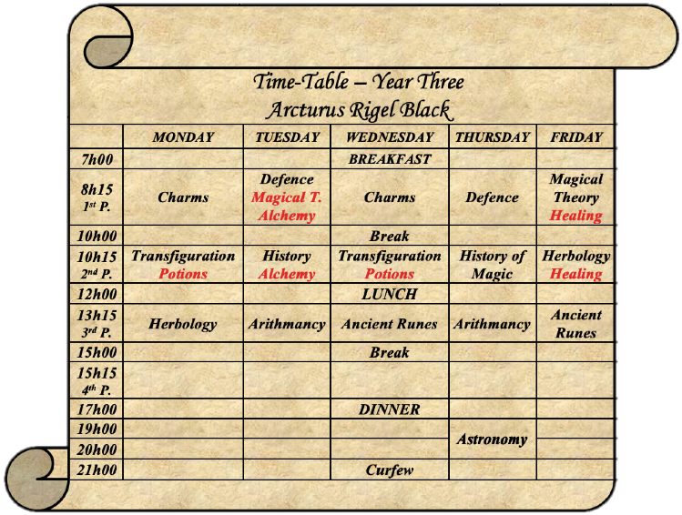

Chapter 6

Limitless Time
Rigel dodged yet another clump of absent-minded students obstructing the platform as they wandered aimlessly with their trunks, searching for the friends they’d left there the year before. Rigel’s, or rather Archie’s, trunk was safely ensconced in her robe pocket, and as she’d already said goodbye to Sirius at the platform gate, she walked with purpose through the throng toward the train. It was early yet, and most of the compartments she passed on the way to the bathroom were empty. There was no one at all in the lavatory, presumably because there were nicer bathrooms on the platform itself if anyone really couldn’t hold it.
Rigel hung her satchel on the inside of the stall she ducked into and pulled out the dose of Modified Polyjuice she’d prepared. Sending up a quick prayer that she and Archie hadn’t grown much over the summer, she knocked it back with a grimace. When the snakes in her stomach had settled into a more comfortable position, she abandoned the stall and sought the mirror above the sink. Comparing the face in the glass to the one Archie had worn all summer was difficult, because they were so similar, but there was definitely a sharpness around the nose and jaw that she thought had been rounder before.
She pushed her hair back off her brow into the more severe style she’d worn to Draco’s birthday party. She still hated how exposed her face felt without proper bangs, but Archie assured her the style highlighted her eyes and forehead, drawing attention away from her changing lower facial features, which Archie’s masculinity was beginning to noticeably re-shape with each dose of Polyjuice. She reckoned she’d only have to wear her hair pushed back for a day or two before her friends got used to her new face, at which point she’d go back to leaving it to fall over her forehead in cropped curls.
She bent to collect her bag from the floor and noticed with mixed feelings that the hem of her robes was an inch too short, now. While being taller would lend credence to her artifice, ill-fitting robes would not. If she were Harry, or even just Rigel, no one would notice too-short robes. Her friends in Slytherin would assume she simply gave her wardrobe the usual lack of attention that characterized her interaction with everything not-potion-related. Remus, however, might know that Sirius had just sent Archie’s robes for re-tailoring not two weeks ago. In fact, Archie had secretly had them re-re-fitted to fit Harry’s form, but in retrospect they should have anticipated some possible growth with the next dose of Polyjuice and left them.
She slouched experimentally in the mirror. It made her look a bit mopey, but it hid the shortness of her hem reasonably well. She didn’t have to fake a tired expression to go with the slouch, at least—she’d started her monthlies that morning, and was already exhausted. Once she’d found a potion that let her regulate her cycles, she’d got in the habit of fixing them to start on the first of the month. It was a pain that she’d be dealing with the onset on the train again, but better to have them at an inopportune time than to forget when they were coming. With any luck she could get a nap in before they reached Hogwarts.
Satisfied that she looked sufficiently Rigel-like, she pointed her wand at her throat and cast the voice-altering spell, practicing a few lines until she felt reasonably sure her voice could pass as Archie’s boyish tenor.
She left the lavatory and headed toward the compartment her year mates generally took for their own. It was still early, so she didn’t expect to see anyone within, but Draco was sitting quietly in a window seat, elbow propped against the sill, fingers digging into the muscles of his bent neck. He looked over with a wince when the door opened, but relaxed somewhat when she stepped inside and closed it.
“Draco,” she smiled a bit, looking him over subtly, “How are you?”
Her blonde friend bristled at the simple question, “What’s that supposed to mean? How are you?”
Rigel shrugged, a bit taken aback, “Same as ever.”
“Why shouldn’t I be as well, then?” Draco said sourly.
“Are you?” Rigel asked, allowing genuine concern to leak into her voice for a moment, “Forgive me, Draco, but you seem… on edge. Has something happened?” Perhaps she was reading too much into her friend’s behaviour because of the vague worry that had been niggling at her mind since Mr. Malfoy had been to Krait’s shop. Draco did look as tired as she felt, though, and she somehow doubted he was suffering something similar to what ailed her that day.
Draco looked incredulously at her, “I seem just fine.” He sat up straighter and tilted his chin challengingly to emphasize this statement, but she could see the strain behind the façade. When she continued to peer worriedly at him, he muttered something about all-knowing, inhumanly observant friends, and sighed, “It’s private.”
Rigel frowned for a moment, but then nodded slowly. It wasn’t like she could lecture him about keeping secrets. She took the seat next to him and pretended she wasn’t worried, instead of pressing him, “How was the rest of your summer?”
Draco grimaced, “Long.”
Sensing that much of his summer must have been bound up in whatever had strung out his nerves so completely, and wondering how much, if any, was related to the potion Mr. Malfoy had ordered from Krait, she dutifully changed the subject again.
“Who do you think made Head Boy and Girl this year?” Rigel asked, “Anyone in Slytherin?”
Draco considered it for a moment. “Head Boy will probably go to Weasley,” he said reluctantly.
“Not Flint?” Rigel affected surprised dismay, “I thought the professors really started to warm to him last year.”
Draco smiled wryly, though even that was slow coming, “Flint. I wonder if he’ll even come back this year.”
Rigel’s eyebrows rose, “Why wouldn’t he? It’s NEWT year for him.”
“Think he cares?” Draco shook his head, “He had to do fifth year twice, right? So he’s of age now, or he will be soon. He’s not stuck here anymore. He can get a job, start his life.”
She considered this. There were some jobs you needed to be seventeen for, she supposed. Not everyone could work as a freelance brewer in Knockturn Alley. “He’d be better off with NEWTs, though, especially if he’s looking for career-type work.”
Draco snorted, “Flint’s not cut out for the kind of jobs that require NEWTs.”
Rigel frowned at his easy dismissal, “He’s pretty smart, you know.”
“It’s not about smart,” Draco said, rubbing his head like the conversation pained him, “It’s a question of character. Stop feeling defensive over him, Rigel. Just because he was our captain doesn’t mean we’re obligated to overlook his flaws.”
Rigel let amusement wash away her indignation, “Was? You seem pretty sure he’s not coming back. Care to make a bet?”
Draco looked surprised, but no longer annoyed, at least, “Saint Rigel is going to gamble?”
“Is it gambling if you win?” Rigel asked philosophically.
Draco shook his head with amusement, “Yes. And you’re not going to win. Stakes?”
Rigel tilted her head, “If Flint comes back to school this year, you come running with me every morning for two weeks.”
Draco huffed, “You still do that? Fine, but when he doesn’t return you have to fact check all my potions essays for two weeks.”
“Deal,” Rigel said, pretty sure Draco was wrong about Flint. She had a stack of summer assignments that said Flint had at least been planning to return as of a few months ago.
She reached out her hand to shake on it, and she didn’t think she imagined the slight grimace in Draco’s expression when he clasped it briefly.
Theo joined them shortly, looking tan and very self-assured after his summer in the south of Italy. His voice had deepened over the summer, and Rigel took that as a sign that she’d been right to start using the voice-altering spell this year.
Millicent and Pansy arrived together, and although Millicent looked about the same, Pansy’s hair had grown astoundingly in just a few months. It was several inches past her collarbones, now, with highlights that spoke of too much time out of doors in the heat.
Blaise was the last to arrive, claiming the seat next to Rigel just as the whistle began to blow.
The first topic of conversation was, of course, the new Defence professor.
“Do you think they got anyone to take it after Lockhart?” Millicent shook her head, “It’s not a tough act to follow by any means, but getting petrified probably doesn’t appeal to many.”
“The curse hasn’t done anything that nasty to someone in a while,” Theo remarked, “Maybe it only reacts that badly to really incompetent professors.”
Rigel smiled at that, “Then this year should be uneventful—my uncle Remus is taking the job.”
“Seriously?” Theo blurted, “I mean… that’s great.”
“I was under the impression that your uncle was medically prevented from holding a job,” Blaise commented delicately.
“He is,” Rigel said easily, “But Dumbledore is a law unto himself. Apparently the Headmaster has complete hiring and firing privileges at Hogwarts, ministry sanctions notwithstanding.”
“That’s true,” Draco said, his eyes tight despite the casualness of his tone, “Dumbledore could hire an escaped Azkaban criminal if he wanted. Father’s always complaining about how consolidated his power-base is at Hogwarts.”
“Well if anyone ever actually escapes from Azkaban, we’ll know where to find them,” Millicent said with dark humour.
“Will he be taking Professor Snape’s New Wolfsbane Potion?” Pansy asked. Somehow Rigel had forgotten how shrewd Pansy could be.
“Yes,” Rigel said, “The breakthrough in Wolfsbane was what prompted Dumbledore to consider Remus for the job.” It also struck her privately that Dumbledore wanting Remus for the Defence position could explain why Snape had been so motivated to make that breakthrough in the first place.
“What’s he like, as a professor?” Blaise asked curiously, “I don’t think I’ve ever heard much about the man beyond rumours of his… condition.”
“He’s very knowledgeable on a variety of subjects,” Rigel said honestly, “He’s an accomplished dueler, and something of an expert in magical creatures. Personality wise, he is notoriously even-tempered, and he has a wicked sense of humour, but I’m not sure he’ll show that in class.”
“You’re so obviously fond of him,” Pansy said, her eyes soft, “I’m sure we’ll quite enjoy his classes.”
“Anything’s better than Lockhart,” Millicent shuddered, “Will it be hard to treat him like an authority figure now, though?”
Rigel smiled, “I doubt our relationship will change much. It’s hard not to respect Remus.”
Her uncle seemed to be working on distancing himself already, in fact. When Sirius suggested Remus escort Archie to the station, Remus was adamant that it would set an uncomfortable precedent. No doubt he anticipated accusations of favouritism, and his fair nature compelled him to nip the suspicion in the bud. Rigel wasn’t going to complain—anything that would make the deception easier.
The conversation moved on to how everyone’s summers had been. Theo was remarkably tight-lipped about his exploits in Italy, though he did waggle his eyebrows at Blaise when he thought Pansy and Millicent weren’t looking.
He glanced at Rigel and abruptly snapped his fingers, saying, “I almost forgot, I met your cousin, Rigel.”
Rigel had forgotten about that, too. “Really?” She feigned a mild interest, “Where? She was terribly busy this summer—I hardly saw her, and our families dine together most nights.”
“Diagon Alley,” Theo said, “She was shopping at Quality Quidditch. Does she play?”
“Beater,” Rigel nodded, “She doesn’t get the chance to practice much at AIM, though.”
“What’s she like?” Pansy asked, curious as ever about anyone she didn’t know well.
“Very cool,” Theo said earnestly.
“Is she pretty, your cousin?” Millicent asked slyly, eyeing the approving glint in Theo’s eye.
“Not particularly,” Rigel shrugged.
There was a moment of silence, after which Pansy sighed, “You’re not supposed to say that about a Lady, Rigel, how many times must I tell you that?”
“Harry wouldn’t mind me saying so,” Rigel said, only a bit ironically, “She appreciates honesty.”
“Well you’ve known her too long, obviously,” Theo said, shaking his head at the others, “She looks a lot like Rigel, only… I don’t know; not plain, though. Lovely eyes. She has a very casual air, but it’s weirdly captivating, too. It’s hard to explain. She looked at me like she knew things about me—but not in a creepy way. As if we were old friends, only we’ve never met. She’s much friendlier than Rigel is. Funny, too.”
Draco snorted gracelessly, “It sounds like you’re in love, Theo.”
Theo flushed, “Just wait until you meet her—you’ll see what I mean.”
“You’re romanticizing her, because you don’t know her very well,” Rigel shook her head bemusedly, “Harry’s not anything special.”
“That’s a perfectly awful thing to say about your cousin,” Pansy said.
Rigel sighed, “I didn’t mean she isn’t worth knowing, just that there’s nothing that unusual about her. She’s just Harry.”
“Like you’re ‘just Rigel,’ you mean?” Blaise had a sardonic tilt to his mouth.
Rigel shrugged, not at all sure what to say to that.
Conversation lulled, the train rocked along, and Rigel didn’t realise she’d fallen asleep until she woke to the sound of high-pitched yipping noises and several surprised curses.
She opened her eyes and rubbed at them absently as she glanced around the compartment. The door was open and Theo was standing in the middle of the compartment, balancing on one leg as he tried to avoid stepping on something jumping in circles beneath him.
It looked like a baby crup, no bigger than a small rabbit, with curly brown fur and a simple ribbon collar in black and gold.
Millicent had one hand pressed to her mouth, chortling, and Pansy was shaking her head with exasperation. Blaise and Draco just watched Theo dance around the little animal in resigned amusement.
“Found a new friend, Theo?” Rigel asked after a moment.
“It followed me in here when I went out to buy a snack,” Theo said irritably, “Every time I try to shoo it out it just circles around behind me.” With a sigh of annoyance, he swung his foot back slightly, as though he would give the pup a little kick in the direction of the door.
“No!” Pansy protested, but it was Blaise who reached down suddenly and scooped the crup out of harm’s way.
“What?” Theo said defensively, “It’s just some Hufflepuff’s pet.”
“It’s a living creature,” Pansy said staunchly, leaning over to pat the curly-haired crup apologetically on the head. “Thank you, Blaise.”
Blaise shrugged unconcernedly, then frowned. He lifted the crup higher toward his face and sniffed at it. A moment later his expression stiffened and he moved from holding the animal by its scruff to cradling it in his arms.
“Aren’t you going to take it to the prefect’s compartment?” Millicent asked.
Blaise shook his head slowly, “His owner will come looking for him soon enough.”
“All the more reason,” Draco muttered, “Don’t need more people in here.”
Blaise didn’t respond, but settled the pet rather decisively in his lap.
Theo rolled his eyes, but sat back down, “At least it’s quiet now.”
It was another twenty minutes before anyone came knocking on the compartment door, but it was indeed a pair of Hufflepuffs who stuck their heads in a moment later.
“Has anyone seen—oh!” Hannah Abbot rushed into the compartment and bent down in front of Blaise until she was eye-level with the crup, aiming a bright smile into its face, “He’s here, Ernie. Hi there, little guy. Did you miss me?”
The crup yipped up at the yellow-haired girl cheerfully, but didn’t squirm to get free of Blaise’s hold.
“Thank you so much for watching…” Abbot trailed off as she looked up and caught Blaise’s gaze. Their dark-skinned friend was staring very intently at the girl from under his lids. After an awkward moment in which the Hufflepuff cleared her throat, she continued, “Well, thanks. Um, I’m Hannah. I mean, we’ve met, but not really… well.”
Abruptly she seemed to realise she was bent awkwardly over Blaise’s lap, and straightened with a blush. She looked around the compartment uncertainly, smiling nervously as her gaze flitted from face to face.
“Anyway, thanks for looking after him,” she said with an awkward smile, “I just got him this summer from my aunt, and he’s not very well trained, and I’m really sorry if he bothered you…”
Seeing that no one else was going to say anything, Rigel put on a kind smile, “It was no trouble, right guys?”
Pansy took that as her cue to incline her head graciously, and Theo mumbled something semi-agreeable under his breath.
Abbot fingered one of her pigtails nervously, “Thanks, Rigel. I… owe you one?”
It was clear she assumed that’s what one was supposed to say to Slytherins when they helped you, but also clear she had no idea what she was really offering.
“Are you kidding?” Rigel affected an embarrassed expression, “I still owe you for saving me in first year. Anyway, it’s Blaise you should thank. Blaise Zabini, in case you haven’t been introduced formally.”
“I, ah, I’ve seen you around,” she offered, giving Blaise a friendly head-tilt, “Hannah Abbot.” She held out her hand to shake.
“He knows,” Draco muttered quietly. Rigel elbowed him discreetly as Blaise reached out slowly to clasp her hand.
He held it still, without shaking it, and said, “It is a pleasure and honour to make your formal acquaintance, Miss Abbot.”
The girl’s pigtails quivered as she glanced up at Blaise’s face, down to their clasped hands, then back up in quick, nervous succession, “Likewise.”
Ernie Macmillan, who was standing in the doorway with his arms crossed, cleared his throat pointedly, “Hannah. Let’s go.”
Abbot smiled again and tugged her hand out of Blaise’s grasp gently. She reached toward the crup in his lap, and Blaise obligingly handed him over carefully. “Thanks, again,” she said with a little self-deprecating chuckle, “See you all in class.”
“Goodbye, Miss Abbot,” Blaise said with a slow smile.
The Hufflepuff girl positively tripped her way back out into the corridor, and when the door slid closed once more Theo and Millicent both let out snorts they’d apparently been repressing.
“Smooth,” Millicent laughed.
“Thank you,” Blaise said, unconcernedly brushing a bit of stray fur from his robes.
“So you’re going for it this year?” Theo asked suggestively. It seems Rigel wasn’t the only one who’d noticed Blaise’s unusual… fixation on Abbot.
“Don’t be crass,” Pansy said mildly.
“We’ll see,” Blaise said evenly. Despite Theo’s needling, that was all he’d say on the subject.
The train pulled into the station just after dark. They piled out like a wave across the platform, Theo, Millicent, and Blaise splitting off in silent agreement to find their own carriage. The crowd of students was thick, but it was still a complete surprise when Draco suddenly clutched at Rigel’s arm and leaned his weight on her.
She looked over to see him grasping Pansy’s forearm with a slightly gentler grip as well. Pansy frowned and subtly stepped closer to support their friend without calling attention to his apparent weakness.
Rigel leaned her head in and asked lowly, “What’s wrong?”
“Nothing,” Draco gritted out, despite the fact that his face was paler than parchment and he was fighting full-body tremors as they moved through the crowd. Several times she saw him flinch away from the people around him.
Rigel exchanged a glance with Pansy, and in tacit agreement they propelled Draco toward the carriages as quickly as they were able to without causing a scene.
They half-hoisted their friend into the first one they came across. There was already a small girl sitting alone within, but they ignored her in favour of making sure Draco wasn’t going to collapse or go into a seizure or something.
“I’m fine,” Draco snapped, curling his arms around his narrow torso and turning his head out of the carriage window as it began to move forward.
Rigel and Pansy both backed off, settling back into their seats without pressing Draco further. The fourth member of their compartment didn’t seem to be paying any attention to the mini-drama; in fact, she appeared to have sunk into herself psychologically. Rigel frowned as she took in the girl’s drawn features and tense posture. Instead of moving with the rocking carriage, she sat so stiffly that it jarred her with every bump.
Just as Rigel was going to ask what was wrong with her, Draco sighed sharply and turned to glare at the girl. “For Salazar’s sake, girl, they aren’t that frightening. Stop sniveling.”
Pansy frowned, “Draco—”
“What?” he turned his irritated glare on Pansy, “She’s going to be taking the carriages for the next six years, so she might as well get over it now.”
Pansy gaped a bit, taken aback by Draco’s inexplicable vehemence.
“H-how did you know?” the petite girl gasped out.
Draco’s features closed down abruptly, “It’s obvious by how tense you are that you’re scared. It didn’t start after we got here, so you’re frightened by something about the carriage. If you can get on a train, you aren’t afraid of moving vehicles, which leaves the thestrals.”
“Why do the horses have to be invisible?” the girl whispered, shuddering a bit, “It’s like being driven by a ghost.”
“Be grateful you can’t see them,” Draco said darkly, “They’re even more hellish when visible, I hear.”
“Draco,” Pansy said, exasperated. She turned to the other girl with a soft expression, “There’s nothing to be afraid of.”
“How do you know?” the girl said, looking at Pansy very solemnly through wide, baby blue eyes. She would be incredibly beautiful, Rigel realised, when her features weren’t cramped with misery.
Pansy faltered under the serious question, but Draco blew out a long sigh and said, “They let them pull the carriages—do you think the professors here would let dangerous things near the students unsupervised?”
The girl blinked slowly, her shoulders relaxing slightly, “I suppose not. What if the teachers don’t know—”
“You think you know more than the professors?” Draco said pointedly.
“No,” she flushed, ducking her chin so that her ringlets fell across her cheeks with little bounces.
“Then stop being afraid,” Draco said. He eyed her robes with a slight sneer, “You’re a Slytherin. So act like one.”
Pansy suddenly seemed to place the girl in her memory, and straightened up in her seat, “You’re Astoria Greengrass, aren’t you? Daphne’s younger sister?”
The girl, Greengrass, nodded shyly, “You’re Pansy Parkinson. My sister says you look like a pug.”
Pansy blinked, and Greengrass clapped a hand over her mouth in horror.
“I didn’t mean—you don’t!” she flushed, “You’re very pretty, Miss Parkinson.”
Pansy’s lips tilted in a wry smile, “Thank you. Just Pansy, is fine. May I call you Astoria?”
“Of course,” Greengrass junior smiled, and Rigel noted that she’d been correct—the girl was perfectly lovely.
“These are my friends, Draco Malfoy and Rigel Black,” Pansy said, gesturing toward each of them in turn.
Rigel smiled and executed a parody of a gallant bow sitting down, which came out ridiculous looking and made Greengrass giggle, just as she’d intended, “Pleasure to meet you, Miss Greengrass.”
The second-year girl looked vaguely familiar if she thought back to the group of firsties from the year before, who’d always seemed to move in a small herd, but Rigel was fairly sure she hadn’t known Daphne Greengrass even had a sister, much less one at Hogwarts. Then again, she didn’t converse with the elder Greengrass sister terribly often.
“You as well,” the girl said, and only her bright eyes kept her tone from being simpering. She turned to Draco and flushed a bit, saying, “Thank you, Mr. Malfoy, for your advice. I don’t feel so afraid anymore.”
“Thank Merlin for that,” Draco mumbled, with the barest nod of courtesy in the girl’s direction.
Greengrass didn’t seem offended, though. She beamed as though Draco had said something perfectly chivalrous, and settled herself more comfortably in her seat for the remainder of the trip.
They swarmed into the Great Hall like so many locusts, hungry and buzzing with impatient anticipation. The sight of the House tables all lined up and bedecked with plates and goblets brought a clenched feeling to Rigel’s stomach and to her horror she felt her eyes watering in a way that had nothing to do with the thousands of floating candles shedding light down on the returning students.
I missed this place, she realised with faint surprise, not just as a place to learn and see my friends, but for the place itself. She wondered if that was part of the magic of the castle, to make it seem like home no matter how many homes a person already had.
She blinked away the strangely warm nostalgia welling up and cast her glance toward the Head Table. She spotted Remus immediately, sitting cheerfully beside a dour Professor Snape, and no doubt at least part of the reason the Potions Master looked even more disgruntled than usual to be presiding over the welcoming feast. She smiled when she saw Remus skimming the Slytherin table idly and gave a discreet nod in greeting when he finally picked her out of the crowd. She tried not to betray any anxiety over his presence in her mannerisms, instead affecting the relaxed, confident air that many of her fellow third years seemed to have adopted since she last saw them.
She supposed it was hard not to feel a bit superior when the second-years were looking so uncomfortably awkward at being seated during the welcoming ceremony for the first time. When McGonagall led in a line of trembling first-years, the amused, smug grins on her classmates’ faces only widened.
Rigel put on a friendly expression, in case any of the firsties’ apprehensive glances around the hall should happen to fall in her direction, and waited in silence with the rest of the hall as the Sorting Hat was brought out and began to sing :
“It’s been a merry thousand years
since this old hat was sewn.
But every moment since then
I have called this castle home.
The dungeons and the library,
the kitchens and the lawns,
The students running here and there,
their laughter and their yawns.
All of this and more I hold
close to my ragged brim.
But lately something worries me
and leaves me feeling grim.
For though I sit here every year
and sort you one and all,
And though I’ve said that doing so
will help you to stand tall,
I wonder if dividing you
by idealistic traits
Might overplay your differences
and chain you to four fates.
Though Gryffindor once told me
I was made to see the heart
It seems to me that naming it
thus chokes it from the start.
If one child is called clever
does that mean he couldn’t dare?
Rowena used her wisdom
to defend those in her care.
Is courage so commendable
when work ethic is lacking?
Never once did Godric say
that chivalry meant slacking.
Does caring for your friends mean
wanting nothing for your own?
Sweet Helga had ambition
and the strength to see it sown.
And can the child with dreams
fulfill them only through deceit?
Salazar oft said success
comes not to those who cheat.
I see the ravens scorn the puffs
and lions fight the snakes,
And everyone thinks far too much
of ancestors’ mistakes.
I can’t help feel my time grows short,
my purpose all but gone.
The past must bow to present needs
or reap a future wrong.
So this time when I call a House
and send you on your way,
Listen close for all the things
I didn’t get to say.
For each of you is special
in a way that can’t be named.
One word cannot define you
though that’s what I’ve always claimed.
So come up here and try me on,
I’ll give you my critique
But know that fractured strength
cannot disguise that which is weak.
Your house is not your destiny,
although it is your home
The world is made of every house,
and not just one alone.”
The applause came slowly, interspersed with murmurs.
“It barely mentioned the House traits—”
“I never heard that Ravenclaw knew battle magic—”
A stern throat clearing by McGonagall eventually cut the whispered speculations short, and the Sorting proceeded without major incident. Dumbledore, ever conscientious of his student’s impatient bellies, did not wait long after the last student scrambled over to the Gryffindor table to let the feast begin.
“I’ve never heard it criticize students so openly,” Rosier, who was sitting a few seats down and across from Rigel, said idly as they began to serve themselves. It took a moment for Rigel to realise he was talking about the Sorting Hat, but she observed several other older students nodding their heads in silent agreement.
“How does it know the Gryffindors are slacking, anyway?” Adrian laughed, glancing over his shoulder at the red-and-gold-plated table behind him.
“They’re always slacking,” someone else said dismissively, “That’s what happens when you have no ambition, no work ethic, and no smarts.”
Several other people laughed, and the conversation moved on.
“Don’t seem to have absorbed the Hat’s message much, do they?” Rigel asked in quiet amusement, turning her head toward Draco as she speared a potato on her fork. The teasing grin dropped from her lips as she took in his absolutely haunted expression. He was white-faced and tight lipped, his hands clenched in his lap, not even bothering to pretend like he was eating.
Rigel immediately began surreptitiously sliding food onto his plate in between serving herself. An empty plate would attract obvious attention, once people started looking up from their food. She leaned her shoulder gently into Draco’s, and he flinched violently at first, then began to sag into her side. She stiffened her muscles as much as she could to act as an unobtrusive prop, and after a few moments she felt Draco take a deep, steadying breath.
“All right?” she asked mildly, knowing that a concerned or suspicious tone would only attract the notice of those around them.
“Fine,” Draco said, and somehow his voice came out with casually controlled ease, despite the slight quaking that passed from his wobbly frame to her solid one.
He began to slowly eat with his left hand while his right side leaned into her. It wasn’t obvious that she was supporting him, thanks to how crowded the tables were, and she was impressed with the level of relaxation he managed to inject into his movements, despite also being painfully aware of how little strength he seemed to have. Her left shoulder and side began to ache after a while, but she said nothing, keeping as still as possible, and idly wondering if she had known Draco was ambidextrous and forgotten, or if he’d merely hidden the skill extremely well until now. His left hand didn’t so much as hesitate in guiding food gracefully from plate to palate.
Even Pansy didn’t seem to notice Draco’s weakness, though Rigel reflected that if their blonde friend had noticed she likely would not have made any outward sign of her knowledge in deference to her friend’s pride.
The feast seemed to go on much longer than usual, and it was with relief that Rigel saw Dumbledore finally stand and command the Hall’s attention with a genial smile.
“Welcome all to a new term at Hogwarts,” he said with a little bow in the students’ general direction. The movement caused his hat to slip forward into his eyes and many laughed good-naturedly as the Headmaster straightened it with an embarrassed little grin. “So many new faces I see tonight, a few of which sit at this very table,” Dumbledore gestured to his left and right. “As you may have heard, our esteemed Professor Lockhart found that teaching was not his calling after all and decided to continue his battle against the dark forces in a more active fashion. In his place, I am pleased to welcome Professor Remus Lupin, accomplished duelist and expert in the art of magical defence.”
The Hall clapped politely while Remus stood and gave a brief smile and wave.
“Alas, dear Professor Lockhart was not the only one of our family to leave us this summer,” Dumbledore continued, “Our good friend Professor Kettleburn has, at long last, retired. Our new Care of Magic Creatures professor is not present at the moment, but I’m sure—”
The door behind the staff table banged open loudly and a short man in a long brown coat came scurrying through, “I’m here,” a small voice coughed apologetically, “Here, Headmaster. Sorry. Trouble with the thestrals…”
“Ah, your timing is most appropriate, Professor Pettigrew,” Dumbledore said with a friendly wave, “Come and introduce yourself to the students.”
Rigel started involuntarily at the name “Pettigrew” and felt Draco jerk as though in echo of her surprise. “Sorry,” she muttered distractedly, eyes fixed on the Head Table.
Pettigrew was the fourth Marauder, the one who’d broken ties with her father and uncle after declaring allegiance to the SOW Party. He was to teach here, the same year that Remus happened to be teaching? That was a rather large coincidence, she thought with a tendril of suspicion.
As Pettigrew stammered through a brief, “Hello,” to the Hall, Rigel looked toward Remus and surprised a look of utter bewilderment on his face. So her uncle had not known about Pettigrew’s arrival at Hogwarts, either.
The start-of-term announcements continued after Pettigrew took a seat beside Hagrid, but Rigel was not really listening. She was thinking. Someone had to fill Kettleburn’s place, of course, but for it to be a member of Riddle’s party, even a junior member… was is really a coincidence? Riddle had promised to stop meddling at Hogwarts. Was he already going back on his word?
Rigel shook the suspicion away with difficulty. Lots of people were members of the SOW Party, probably. Maybe even some of the other teachers were, too. She realised she didn’t actually know all her professors’ allegiances, and reassured herself that if Dumbledore had hired him, he was bound to be okay. Then she remembered that Dumbledore had hired Lockhart, too, and Quirrell before him.
He was friends with Sirius, James, and Remus, once, she told herself, he can’t be as bad as all that.
He seemed familiar, too. Like a face she’d seen in a crowd once, or printed in the newspaper, perhaps. On top of all that, he was so… unassuming. He stumbled through his introduction, but not in the contrived, stuttering way that Quirrell once had. Pettigrew seemed genuinely flustered at all the attention, and his face turned a cherry red as he slinked away to his seat. She could almost feel sorry for the man—and probably would, if she hadn’t known how the loss of his friendship had hurt the other three Marauders for many years after.
Dumbledore wrapped up his speech quickly and sent them off to bed. Rigel took a risk and casually slipped an arm under Draco’s outer cloak and around his waist as they stood. Supporting him, she lingered at the edges of the Slytherin crowd as it headed down into the dungeons.
When they reached the common room, Rigel skirted the room with Draco and slipped unobtrusively down the hallway to their dorm room. Everyone else would be congregating for the start-of-term house meeting with Professor Snape, but Rigel thought her Head of House would forgive her for being more concerned with Draco’s health, even if the meeting was supposed to be mandatory.
Maybe he won’t notice we’re missing, she thought, wryly optimistic.
When she nudged the door closed behind them, Draco immediately pulled away from her and slid to the floor by the foot of his bed, where his trunk was sitting. He opened it, and, thinking he meant to unpack before resting (as was the fastidious boy’s usual habit), Rigel moved closer to help.
Draco snapped his head up at her with a scowl, “Going to watch me undress?” he asked snidely.
Rigel stopped and turned with a shrug toward her own bed, which was once again next to Draco’s. She fished in her trunk for her pyjamas and heard the rustling sound of shifting fabric that told of Draco doing the same.
Then she heard the tell tale snick-pop of a small cork being pulled from a vial. She turned her head slightly to see Draco shoving something underneath the top layer of clothing quickly, a grimace on his face, no doubt from the aftertaste of what he’d just gulped down. She politely ignored the slight smell of suppressant potion that permeated the air, but she did wonder how stupid Draco thought her to be, exactly.
She dawdled until Draco climbed into bed and closed his curtains, then let her face melt from its serene expression into a thoughtful moue. The potions were definitely meant for Draco, then, and he was taking them willingly. All clues pointed to a magical gift recently acquired, but what could Draco have unlocked that would be so draining that it required suppressant potions to—apparently unsuccessfully—subdue? Most magical abilities did not negatively affect the user, even when out of control. It had to be a gift that caused the environment to influence Draco, instead of the other way around. He could be a magic-sensor, she supposed, which would certainly explain why he was overwhelmed by Hogwarts even with the suppressant potion dampening his sensing abilities. He could also be some sort of elemental mage—the ambient magic around Hogwarts would definitely give Draco one monster of a headache before he learnt to control it were that the case.
Rigel shook her head as she quietly began unpacking her things. There was no way of knowing for sure until Draco told her. Whatever his gift was, he wasn’t in full control of it, and it was unlikely to pose a real threat until he was, and maybe not even then. She hadn’t learnt Occlumency for nothing, after all.
*
Severus strode quickly from the Slytherin dorms, not because he was in a particular hurry, but because only the disgustingly young thought time could ever afford to be wasted. His start of term speech had gone smoothly, though he noted the absence of two particular third-years with little surprise. Lucius had of course informed Severus of his godson’s recently acquired… ailment. That Rigel Black had already noticed and responded to his friend’s condition was inevitable, and a testament to the boy’s suitability as an asset to the Malfoy family, besides.
He arrived at the too-familiar stone gargoyle in a timely fashion, and only after affixing an appropriately disgusted sneer to his features did he utter the phrase “Jumping Jellies” in its general direction.
Albus had already donned a dizzying nightshirt that appeared to portray a patchwork of meaningless symbols, all of which orbited the Headmaster’s torso exuberantly at a speed unsuited to any sort of sleepwear, much less that of a venerable wizard of Albus’ age and power.
Worse than the garment he wore was the old coot’s twinkling, knowing gaze.
“Has it arrived?” Severus asked tersely.
“Of course, of course,” Albus smiled infuriatingly, “You’ll be giving it to him tomorrow morning, I suppose?”
“That is when the students receive their schedules, is it not?” Snape bit out, resigned to the knowledge that the old wizard was not simply going to hand it over without pausing to savour the moment first.
“It is so good to see you finally taking such personal interest in a student, Severus,” Albus commented with a satisfied little hum, “It’s about time you took a prodigy of your own. All the other professors have had at least two—Filius has personally trained seven bright young minds, if I recall correctly.”
“As you say,” Severus said, holding a hand out impatiently, “If it has indeed arrived, I will take it now.”
Albus chuckled as he reached into a drawer and pulled out a golden drawstring pouch, “Always in such a hurry, Severus. Let us hope your apprentice shares your… respect for time-management, eh?”
Severus took the pouch expressionlessly, mentally grumbling about wizards who took too much amusement in the sensibleness of others.
“Good evening, Albus,” he said once he had secured the little bag at his belt.
“I daresay it has been,” the Headmaster said, twiddling his thumbs as Severus made for the door.
*
Rigel woke earlier than her roommates, as was her habit, and collected her running clothes before heading into the bathroom she shared with Draco, Theo and Blaise having unofficially claimed the other as their own.
Once she’d stripped down to her underwear, she quickly Evanesco-ed the evidence of her monthly bleeding and performed a bleaching spell on her underwear just to be thorough before tossing it down the laundry shoot. She wondered vaguely if Archie ever considered exactly what his clothing was going through, being lent to her, then decided that for his sake she hoped he hadn’t worked out the exact logistics.
Her magic was under her complete control once more, thanks to a few days work getting used to the suppressant ring. From what she’d deduced, it worked something like a dam on her magical core, holding all but a thin trickle back when she tried to use her magic. She’d done all sorts of experimenting in the days leading up to her return to Hogwarts, and generally the results had left her quite satisfied.
Most of the spells she knew worked perfectly normally. Sometimes when she imbued a potion it took much longer than normal, because while she could direct the magic to the potion she couldn’t widen the “hole,” so to speak, so there was only so much magic she could use within a certain amount of time.
She couldn’t cast the Depasco shield at all. It simply required more magic at a faster rate than she had access to with the dampener on.
She dressed quickly, making sure that the tiny bit of non-flatness that distorted the otherwise masculine line of her chest was invisible even while bouncing due to the tight elastic undershirt she wore beneath the baggier, sweat-stained outer one.
Lastly, she drew on a pair of thin, plain black gloves that nevertheless sat smoothly over the two rings on her left middle finger. There was no need for anyone to know she wore a dampener, particularly if it was one Harriet Potter might be seen wearing in the future, and there was the very slight chance that Remus had noticed Harry wearing the basilisk ring that summer.
She stopped at her trunk to pull out her trainers, and saw Draco poke his head out from behind his curtains as she shut the lid.
“Going running?” he asked, sleep thickening his voice.
Rigel nodded, “Want to come?”
Draco began to shake his head tiredly then stopped, looking thoughtful. “Yes…” he said slowly, “May I?”
“Of course,” she said, a bit surprised. Draco was not a morning person, and usually grumbled about coming running with her, though he did every so often.
Draco had a determined cast to his features as he padded quickly to his trunk and rummaged for comfortable clothing. Rigel looked away as he began to change unselfconsciously into loose breeches, and didn’t look back until he nudged her with the toe of his shoe and a soft chuckle.
“Still so easily flustered, Rye?”
It was the first time he’d used her nickname since coming back to Hogwarts, and Rigel couldn’t help the warm feeling it gave her insides. She had begun to think her friend would be perpetually grumpy, at least until he adjusted to whatever magical gift was affecting him.
“It turns my stomach to see naked people so early in the morning,” she drawled softly, a curl of disgust on her lips.
“Sure it does,” Draco huffed, grabbing his wand and fitting it into the holster on his arm with casual grace. She wondered wryly how many times he’d practiced that motion since getting the wand-holder for his birthday. “Just admit you’re a prude,” he said as they slipped out of the room and into the hallway.
“As soon as you admit you’re an exhibitionist,” Rigel tossed back.
“I prefer to think of it as a form of community service,” Draco said archly, “The world would be a drab little place without my beauty to brighten it.”
“That’s what women are for,” said an amused voice by the common room door.
They looked over to see Pansy waiting for them casually at the entrance wall, dressed in loose-fitting clothing, her medium-length hair pulled back into a no-nonsense bun. At their surprised looks, Pansy laughed and shook her head mockingly, “You didn’t think I’d let you boys have all the fun, did you?”
Rigel felt even warmer still as the three of them traipsed out to the castle lawn and down toward the lake where she preferred to jog. She had missed her friends over the summer. She loved her family dearly, but she never felt less alone than she did with Draco and Pansy by her side.
“I hope you kept in shape this summer,” she said, a bit of cheek in her voice, “I’d hate to have to run circles around you.”
“Not all of us were distracted with what was no doubt untoward amounts of potions brewing, Rigel,” Pansy said slyly, “You just try to keep up.”
The blonde girl took off at a brisk pace, her muscles making no unnecessary movements as her feet propelled her across the ground.
“You heard the lady,” Draco said, a smile on his lips. They took off at a reasonable jog of their own and Rigel couldn’t help but notice Draco noticing Pansy’s admittedly trim figure as she glided just ahead of them.
When did we start getting old enough for that? She wondered idly. Not that she disapproved. It could only be a good thing if Pansy and Draco became… interested in one another. They were a good match—friendly with one another, both Heirs to prominent families… and if their attention was on one another, well, how much time could they spend wondering about their other friend Rigel’s enigmatic life?
Those were thoughts for the future, though, so Rigel let her mind wander to other things as they made good time on the rest of their run.
Draco was noticeably more tired than either Pansy or Rigel by the time they reached their starting point, but it was he who, in between pants, asked, “What… next?”
Rigel led the stretching routine, then the strengthening exercises, lending her friends her hand weights when they sheepishly replied they had forgotten to bring theirs along. Rigel had long since stopped wearing weights constantly in an effort to bulk up—the amount of physical exercise she had been getting over the summer meant her arms and legs were whip-chord tight now—but she kept the hand weights in the pockets of her workout attire, since the exercises Remus prescribed her still required them.
They arrived at breakfast just in time to see Professor Snape handing out the schedules for the new term. This would be the first year they were permitted to choose extracurriculars, and their year mates were already beginning to excitedly compare their schedules.
Draco and Pansy received theirs eagerly, examining them with pleased expressions, but when the time came for Rigel to get hers, Snape fixed her with a level stare and said, “There were issues accommodating the classes you opted for, Mr. Black. Come to my office after your meal and we will discuss possible revisions.”
Rigel quietly agreed, fighting a frown. Draco, who was looking much improved from the night before despite the way he continued to twitch unprovoked every so often, raised an eyebrow at Rigel’s empty hands. “Tell me you didn’t try to sign up for all of the optional classes.”
Rigel suppressed a flush, “Of course not. Maybe one of the classes they put me in was cancelled, or something.”
“What did you want to take?” Pansy asked curiously, “I’ve got Care of Magical Creatures, Arithmancy, and Divination.”
“Divination?” Draco wrinkled his nose, “Why?”
Pansy shrugged, “I thought it would pair well with Arithmancy.”
Draco didn’t seem convinced, but he said, “I’m taking International Studies, Ancient Runes, and Dueling. I applied for the Healing course, but I suppose my Charms work wasn’t up to snuff.”
They looked expectantly at Rigel, so she shrugged uncomfortably and admitted, “I just picked whatever seemed interesting. Arithmancy, Ancient Runes, Magical Theory, Healing, Dueling, Alchemy… I knew it was too many, but I thought they’d just put me in whichever ones were convenient, providing I even got into all of them.”
Draco rolled his eyes, “Did you even prioritize them on your form?”
She smiled a bit sheepishly, “I’m not too picky. Anything besides Potions is secondary, Professor Snape knows that. I didn’t want to take a spot in a popular class that someone else really wanted when I’d be happy with anything.”
Her friends shook their heads good-naturedly, but otherwise went back to exchanging schedules with the others.
She entered Snape’s office at his beckoning and sat in the plain chair he’d provided her. She couldn’t remember at what point the Potions Master began transfiguring a seat for her when they met in his office, but she felt no small amount of pride at the thought that she’d risen enough in his esteem to merit it.
Snape favoured her with a long, penetrating stare before he spoke; “There are not many students in this institution who truly appreciate its purpose, Mr. Black. Many of your peers are here because our laws require a witch or wizard to earn a minimum of four OWLs in order to retain his or her wand. There are some, however, like yourself, who are here to actively pursue an education. Among those students, those who show genuine promise are even fewer. Of those with potential, fewer still demonstrate the dedication and level-headedness necessary to earn the unanimous esteem of their professors. These latter students, Mr. Black, are therefore awarded certain… opportunities.”
Rigel just blinked, unsure where Snape was going with this. Would they allow her to take more than the recommended three electives after all?
“As such opportunities are not available to the majority of students, it is necessary that they be handled with a particular attention to discretion.” Snape’s gaze became, if possible, more serious, “What I am about to discuss with you will remain a secret. You will not tell Miss Parkinson and you will not even hint at it within Mr. Malfoy’s hearing. Is that completely understood?”
“Yes, sir,” Rigel said, a bit alarmed. What in regards to her schedule could possibly warrant such secrecy?
Snape nodded in a satisfied way, reached into his desk drawer, and withdrew a thin, golden chain, at the end of which hung a sturdy-looking hourglass filled with golden sand and encased in a circular shell.
“This is a Time-Turner,” Snape said, sliding the necklace carefully across the desk. “It allows its wearer to travel backwards in time, not to change time, but to re-live periods of it. With this model, one can travel a maximum of seven days into the past, but you will never need to use it to travel more than 12 hours back. You will never tell anyone you have access to this device. Some professors have already been informed, of course, but the other students must not know.”
Rigel stared at the tiny device in patent disbelief, “You’re giving me a Time-Turner?”
“The Ministry is loaning a Time-Turner to a very promising young student who has already demonstrated exceptional moral fiber in the face of adversity. It is to be used only for the purposes of academic enrichment. The moment its use is suspected to be flagrant in any manner, it will be removed from your possession forthwith.”
Rigel nodded slowly, still coming to grips with the fact that Snape was giving her a Time-Turner. “So…” She cleared her throat and tried again, “What classes am I taking, then?”
Snape wordlessly handed her a very complicated-looking schedule. There were thirteen classes in total, she counted, seven core classes and six electives. Except… “I don’t have Potions with the other third years?”
“You are beyond any material covered in third-year Potions,” Snape said frankly, “It would be a waste of your time and an unfair level of competition for your classmates. You will have private lessons three times a week with me instead.”
She inclined her head, not about to turn down personal lessons with Master Snape, even if it did mean one less class with her friends. “I didn’t expect to be accepted into all of these,” she commented faintly, scanning the extracurriculars. Arithmancy, Ancient Runes, and Magical Theory were open to all students, as none required a strong background in any particular subject, but Healing, Alchemy, and Dueling all required recommendations from the Charms, Potions, and Defence professors respectively. She supposed they must just look at a student’s record for Defence, since professors were so inconsistent.
“You’ve already been taking Healing lessons with Madam Pomfrey once a month,” Snape pointed out, “Now you will have them two hours a week. Your scores on the Defence Against the Dark Arts end of term exams have been above average both times. As for Alchemy, there is no question that you have both the Herbology and Potions experience necessary to attempt the art. The Headmaster is very busy, however, which is why you have only one double lesson a week in that subject.”
Blowing out a slow breath at the idea of studying Alchemy under Professor Dumbledore himself, Rigel said, “If it’s all right, professor, I would like to drop the Dueling class completely. I’m grateful to be accepted, but I believe even with the Time-Turner twelve classes will be more than enough.”
In truth, she would have loved to take Dueling, but when she’d applied for it she hadn’t known Remus would be teaching it. The less time she spent with her uncle, the better.
Snape regarded her thoughtfully, then smiled ever so slightly, “Very well. It is exactly this kind of prudence that afforded you this opportunity, Mr. Black.”
Rigel swallowed the sick feeling of guilt in her stomach, and smiled back.
“If everything else is in order, I will explain how this Time-Turner works, and you will use it to go back one hour and arrive at your first class on time.” Snape went through the mechanics of the Time-Turner quickly, and Rigel was surprised by how simple it was. She merely had to turn the shell half of a turn for every hour she wanted to go back. “I recommend you limit yourself to turning only an hour or two at any one time, then turning again later that day if you’ve need. Once you begin repeating whole days at once, it becomes more and more difficult to remember where and when you are supposed to be.”
Rigel nodded. That made sense. “I’ll be awake more than the recommended 16 hours a day with this,” she commented, “Should I sleep more to compensate?”
“Yes,” Snape replied, “You’ll want to sleep an extra hour a night at least, depending on how many hours you turn that day. On the back of your schedule there is a recipe for a potion that will lengthen your sleep cycle an average of five hours a day. Although you shouldn’t need to repeat more than two hours a day to attend all your classes, you will need the extra time to complete homework assignments for your additional workload. You are responsible for brewing the potion yourself and taking it once a week.”
She nodded to show she was listening, looking over the schedule. “On Tuesdays I have Magical Theory at the same time as Alchemy and Defence. So I can redo the same hour more than twice?”
Her brain was beginning to catch up to the possibilities the Time-Turner represented, and she was having trouble suppressing her growing excitement.
“You can be present in the same time no more than six times at the very most, which is more than you will ever require,” Snape said curtly, “Too many identical cores in close proximity can cause extremely unnerving magical resonance that has been known to disrupt or damage a wizard’s magical core indefinitely.”
Rigel made a mental note not to repeat any hour more than five times, just in case. “Will it age me?”
“It will,” Snape allowed, “But no more than a few months unless you use it excessively.” He eyed her sternly as though he knew exactly what she was thinking. “This is an enormous responsibility, Mr. Black. You will be psychologically evaluated at random intervals throughout the year and if at any point I find you are using this device unwisely, I will be unspeakably aggravated.”
Rigel put on her best reassuring smile, “Academic pursuits only, sir. I understand. Thank you. I won’t make you regret giving me this chance.” She was going to take twelve classes. Twelve! And she would never not have enough time for something again! Occlumency, Healing, Flint’s assignments (provided he ever showed up to claim them), even brewing for Krait would be no problem now.
“There are a few more conditions,” Snape cautioned, “People with registered Time-Turners are not allowed to participate in competitive sports, in case they use their advantage to view the game before participating in it, so you will be forced to withdraw from the Slytherin House Quidditch team if you decide to accept this.”
Rigel grimaced, but nodded her understanding.
“You must never take the Time-Turner off. Not when you shower, not when you sleep. Change clothing in a way that will not reveal it to anyone, though it is spelled with a subtle Notice-me-not that should suffice unless you call deliberate attention to it. You must remember where you are at all times; do not cross paths with yourself, do not be seen by two different people at the same time if they are likely to mention it to one another. Most of your classes are organized such that the regular third-year classes only overlap with classes you will take one-on-one, like Healing and Alchemy, but this is not always the case. Do nothing memorable in class, nothing that will be talked about. When your friends ask which classes you’re taking tell them only the ones that cannot be kept private. This,” he pulled out a second schedule, much simpler than the first, “Is the schedule your friends will see. You are taking Ancient Runes, Arithmancy, and Magical Theory only once a week. Your private lessons with me are during your third-year Transfiguration classes, so say only that you are self-studying Potions according to an advanced syllabus of my devising. Any questions?”
It was a lot to take in. She thought for a long moment, but the only thing she could think to say was, “Thank you.”
“You are due in Charms,” was all he said in reply.
She stepped into a small alcove and turned her Time-Turner back an hour, then checked the wrist watch she used to time potions in lieu of the pocket watch Archie gave her (being that she still couldn’t open that one) and realised it still showed the time being an hour later.
Of course, she mentally sighed, her watch was moving linearly like she was; it didn’t care that she’d traveled backwards in time. Its cogs just kept ticking along. She got out a small notebook and noted the date and time she’d used her Time-Turner discreetly on a blank page toward the back. She suspected this was going to get complicated.
In a burst of curiosity, she pulled out the Marauder’s Map and looked for a dot bearing her name. There were two, she realised with a small smile, one up in the Great Hall and one in the alcove in the dungeons. That was certainly going to be useful. If she ever forgot where one of her was at a given time, she could just check the Map to make sure she didn’t run into… her? Herself? Shaking her head, she put the Map away and used her wand to cast a spell that showed the actual time.
She still had twenty minutes before she would even leave breakfast for Snape’s office. A little unnerved by the idea that there was another, slightly younger version of herself sitting upstairs in the Great Hall in complete ignorance of her existence, Rigel pulled out her invisibility cloak and put it on. Classes wouldn’t start until fifteen minutes after breakfast, so she had half an hour to do with as she liked, and she wasn’t going to waste one minute of it.
She pulled out the Dark Disguise book and settled in to read. There was a fascinating section on skin-changing charms that she’d probably never use, but which she thought had a similar methodology to certain skin-related Healing charms, particularly those that vanished potentially cancerous freckles.
*
She arrived in Charms right on time, slipping into a seat between her friends a moment before Professor Flitwick bounced through the door.
“That didn’t take long,” Pansy said, her voice low, “Did you get your schedule worked out?”
“Professor Snape just had to give me my potions syllabus,” she said casually, feeling the Time-Turner under her robes shift as she turned her head, “I’m not taking Potions with you guys this year.”
Before Draco could say more than “What?” Professor Flitwick started class. When it became clear that their first lessons was to be a review of the previous year, Pansy began taking rapid notes, even though she’d barely missed a week of actual classes last term, and Draco tuned out entirely in favour of demanding to see Rigel’s schedule.
She passed over the modified schedule Snape had given her and watched Draco frown as he read it over.
“You’re not in any Potions class.”
“Professor Snape thinks I would benefit more from self-study at this point,” Rigel said, a small amount of pride leaking into her voice, “So I can move at my own pace, I suspect.”
“Will it be like that from now on?” Draco asked, still frowning, “Can you take the OWL in a couple years if you aren’t in the fifth-year class?”
“Yes,” Pansy murmured distractedly, eyes still on the board as her quill flew across the parchment, “Marcus took the Care of Magical Creatures OWL without attending a single class.”
“Oh,” Draco scanned the parchment again, “Why are you taking Magical Theory? It’s a dry class. No practical work, ever. Only squibs take Magical Theory.”
“Anthony Goldstein is taking Magical Theory,” Pansy said, still bent over her notes.
“Squibs and Ravenclaws, then,” Draco drawled.
“And me,” Rigel said sweetly, “I think it sounds interesting.”
“Why didn’t you get into Dueling?” Draco asked, “I thought you said you were applying for it last term. No way you didn’t get in.”
“I got in,” she admitted, “But I had to choose three, and I decided I could practice dueling on my own.”
“I’ll practice with you,” Draco said decisively, “It’s an important skill to have, so I’ll teach you and Pansy what I learn in the mornings after we run.”
Rigel grinned in genuine thanks. Now she could get the benefits of Remus’ continued instruction without actually having to spend a lot of time with him.
Her schedule was passed around to the other third-year Slytherins during class, and it seemed she would share some of her electives with her other friends.
She had Ancient Runes with Blaise, Theo, and Draco. Only Pansy would be in her Arithmancy class. Millicent shared International Studies with Draco, and was also taking Muggle Studies with Theo. Theo alone was in the Magical Languages elective, but Millicent shared Dueling with Draco. Tracy and Daphne were apparently in Divination and Care of Magical Creatures with Pansy, much to their blonde friend’s unspoken annoyance.
After Charms, the third years had Transfiguration with the Ravenclaws. Rigel also had her first lesson with Professor Snape at this time, and she was nervous sitting in Transfiguration, knowing that her future self was on the way to the dungeons, presumably under the invisibility cloak. Draco must have caught on to her nervousness, because he peered at her suspiciously, then said, “What’s wrong?”
Rigel shrugged, trying not to let her discomfort show, “Nothing.”
Draco rubbed his forehead irritably, “You—you look guilty, Rigel. What’s going on?”
Rigel flushed. She thought she’d been perfectly casual. She cast around for something to say, then settled on “I’m not trying out for the Quidditch team this year.”
This, it seemed, was more than sufficient distraction.
“What? Why not?” Draco looked a bit betrayed, which only increased the guilt she felt. “Stop feeling sorry,” Draco snapped, “Just tell me why.”
“I think I should focus on my studies,” Rigel said softly, apologetically, “With the extra classes and all, I just don’t think I’ll have the time.”
“I have extra classes, too,” Draco argued quietly as McGonagall took roll, “Just work a little harder.”
“Rigel already works very hard,” Pansy pointed out diplomatically, “He studies other things, in addition to classes, and he’ll be self-studying Potions this semester, too, which is bound to be time-consuming.”
Draco looked frustrated, but he nodded shortly and turned back to the board, rubbing his temples once more.
After Transfiguration, Rigel told her friends she had to run to the bathroom, feeling a guilty thrill as they went on without her.
She ducked into the nearest boy’s bathroom and glanced around. There was no one present, so she quickly pulled her invisibility cloak from the expanded compartment in her bag and swung it on. She very carefully did not wonder if the future her was also in the bathroom, under the same cloak, waiting to take her place in real time while she turned back two hours to ten o’clock for her first lesson with Snape.
She didn’t take off the cloak until she was outside of Lab One, which had been written on her schedule in lieu of a classroom number, at precisely ten o’clock.
“Right on time, Mr. Black,” Snape said as the door opened and she slipped inside. She couldn’t tell if he was joking, but she opted not to laugh. The Time-Turner was just too terrifying in its potential to be amusing.
“What are we brewing?” Rigel asked, peering into the single cauldron set out on the workspace, inwardly delighted that she wouldn’t be sitting through a one-on-one lecture. There wasn’t a base in the cauldron yet, but the inside had been recently treated with an oil of some kind.
“You are brewing Pensieve Potion,” Snape informed her, sliding a recipe (on non-flammable parchment, of course) toward her.
Rigel could hardly believe she’d heard correctly, but the recipe in front of her was one she vaguely recognized, having researched it for one of Flint’s essays at some point. “It’s beyond NEWT level,” she said, smiling with burgeoning excitement as she read the obscenely complicated instructions, “I’ve heard there are some countries that require their potioneers to obtain a special license to brew this.”
“There are countries that require a license for Pepper-Up,” Snape said derisively, “It’s just an excuse to collect licensing fees. Nevertheless, the potion is indeed complex, and as such you will not attempt to brew it on your own until I deem you capable of it.” Snape said firmly, “You will brew many extremely difficult potions this year. The purposes of these lessons is not to give you a grounding in the theoretical—your background in that is more than sufficient for now, and your homework assignments will help fill in the gaps. In our lessons, you will gain hands-on experience with challenging brews, becoming familiar with their rhythms and sensitive to their subtleties.”
Snape eyed her sternly as he outlined the course objectives, “We will brew each potion at least twice. The first time through I will give instructions, help you keep pace with the recipe, and assist if necessary. The second time you will do it on your own. When you make errors—and you will—you will write a substantial explanation of what went wrong and how you will avoid the problem in the future. Then we will brew it again, until you get it right.”
Rigel grinned widely up at the Professor, who frowned repressively at her display of enthusiasm. “When do we begin?”
“After you study the recipe,” he said, a wry smirk twisting his mouth, “This is not free-brewing, Mr. Black. You will put nothing into that cauldron until you know why it is going in there and what it will do to the concoction.”
“Yes, sir,” Rigel tucked her smile into her cheek and bent over the Pensieve Potion recipe with due attention. This year was going to be wonderful.
*
She snuck into the bathroom just a minute or two after her past self should have disappeared and took the cloak off, stowing it quickly. She ducked into a stall to use the facilities, just so it wouldn’t be suspicious if she had to use them again too soon, and then headed off to lunch, feeling a bit smug knowing that her first real use of the Time-Turner had been a complete, unqualified success.
She slid into the seat Draco and Pansy had saved for her and leaned across Draco slightly to snag a roll from the serving plate.
Draco’s nose wrinkled and he turned a raised eyebrow on her, “You smell like sewage, Rigel.”
Rigel’s brain froze for half a moment before re-starting and nudging her mouth into saying, “I think someone set off a dung bomb in the bathroom just before I got there. Is it awful? I can change before Herbology.”
“It’s fine,” Draco said dismissively, “No worse than when you’ve been in your lab all evening. You’ll get dirty during Herbology anyway.”
Rigel hadn’t realised that brewing potions made her smell so badly. It made sense—some of the ingredients were a bit noxious, objectively speaking. She’d grown used to it, over the years, but her friends, apparently, hadn’t. She felt her earlier smugness recede slowly as she made a mental note not to time-turn back to her Potions lessons until after lunch. If she showed up directly to Herbology smelly, people were less likely to notice, since the greenhouses all smelt like soil in any case. It also meant she’d eat lunch at a reasonable time, instead of what felt like two o’clock.
On the bright side, if her friends were accustomed to her being smelly, they might not notice when she put on her Archie-sweat-musk-perfume before Defence lessons the next morning.
Herbology was with the Gryffindors that year, and Rigel sidled over to the red-and-gold cluster of students to say hi to Neville and Ron before Professor Sprout came and unlocked the greenhouses.
To her surprise, Ron, who had an arm around a very shaken-looking Neville, shot her a less-than-welcoming look as she approached.
“Hi,” she said, “How was your summer break?”
“Fine,” Ron said shortly.
“Oh,” Rigel paused, unsure, “That’s good.”
“Yeah,” Ron said, “Look, if you don’t mind—”
“Stop, Ron,” Neville said quietly, “It’s not Rigel’s fault.”
“What’s not Rigel’s fault?” Draco had come up on her left side, presumably attracted by the unpleasant look on Ron’s face.
Ron clamped his mouth shut, but Neville spoke up with a determined look on his face, “I just had a bad Defence lesson, that’s all.”
Rigel couldn’t stop the slight frown of dismay from forming on her face, “What happened?”
“That uncle of yours is a piece of work,” Ron said.
“Remus?” Rigel couldn’t imagine what her uncle might have done to upset a class of third-year Gryffindors, but from the uneasy agreement on many faces, it wasn’t just Neville who had been affected.
“What happened?” Draco asked with a frown of his own, “Wasn’t it just review? You all look… scared.”
Ron bristled, “See how you fare tomorrow. Come on, Neville.”
He dragged Neville toward the doors, which Sprout was just unlocking from the inside, and the other Gryffindors followed suit.
“Melodramatic,” Draco rolled his eyes.
Rigel hoped he was right. Remus’ employment at the school caused all sort of problems for her plans, but she still wanted it to go well for her uncle. A lot in the werewolf community was riding on the success of his year, after all. She supposed they’d find out tomorrow morning.
After Herbology, they walked down to the dungeons and headed to their group’s usual low-backed couch by one of the fires.
Pansy raised a delicate eyebrow at Rigel when she sat down amongst them. “Are you going to socialize with us, Rigel?”
“Why shouldn’t I?” Rigel asked, nonplussed, “Did you want to talk about me or something?”
Pansy laughed, “No, I just assumed you’d have something you needed to be doing.”
“It’s the first day,” Rigel said, “We don’t have any homework.”
“Not schoolwork,” Pansy said patiently, “One of your other projects. I thought you’d want to use the time we have without assignments to make progress on other things.”
“I spend time with you guys,” Rigel said, a bit defensive, “… don’t I?”
“Yes, Rigel, but generally while we’re doing homework,” Pansy said, “Or when we drag you away from something else.”
Rigel swallowed. Was she so negligent? Draco and Pansy demanded so little of her in their friendship. Had she been taking advantage even more than she realised?
“You’re making him feel guilty,” Draco said, sighing.
Pansy looked abruptly regretful, “I’m sorry, Rigel. I didn’t mean to imply you were in any way at fault. I was only teasing you about being so dedicated to your pursuits.”
Rigel smiled softly at the girl, “I know, Pan. How about from now on I try to make my friends one of the pursuits I’m so dedicated to?”
Pansy had a look of pleased hope in her eyes, but it was tempered by caution, “We don’t want to impose on your schedule, Rigel.”
“You aren’t—you won’t be,” Rigel said, feeling that this was a promise she—for once—was going to be able to keep. “I’m going to make more time for you guys this year. I promise.” With the Time-Turner, she’d have no trouble making that statement a reality. Her friends deserved better from her, and she was finally in a position where she could show them that.
“But not for Quidditch,” Draco huffed.
Rigel started to apologise, but stopped at the understanding smirk on Draco’s face.
“I get it, Rye,” he said, waving off her guilty expression, “I did sort of push you into participating, last year. I shouldn’t be surprised when it’s not your top priority.”
“Thanks for understanding, Draco,” Rigel said.
“Speaking of understanding,” Draco said, pulling a face, “I can’t make heads or tails of the first chapter in our Ancient Runes textbook.”
“We don’t have that until Wednesday,” Rigel said, “And I don’t think the professor will expect you to know anything on the first day.”
“Just because other people have low expectations doesn’t mean I should comport myself to their standards,” Draco plucked an imaginary piece of lint from his robes, “I refuse to step foot into any classroom without having at least some idea as to what’s going on.”
“You should ask Blaise,” Rigel suggested, “He’s really good at explaining the basics.”
“Blaise has been acting weird lately,” Draco complained, “He’s all love-sick or something. It’s driving me mad.”
“Why should you care if he is?” Pansy asked, shaking her head, “He turned thirteen this summer, too. It’s probably just that his inheritance hasn’t settled yet.”
“Inheritance?” Rigel repeated, “You mean the expansion of his magical core?”
Pansy and Draco exchanged looks that went over Rigel’s head.
“No, the core growth happens overnight, and it usually only takes a day or two to get used to,” Pansy said slowly, “I mean… Blaise’s inheritance.”
Rigel shook her head in quiet bewilderment, “I’m sorry, Pan, but I don’t know what that means. Is it a—” she stopped herself before she could say “pureblood thing” out loud. “Does a gift run in his family, or something?”
Draco scoffed, “Where in Salazar’s name have you been, Rigel? Blaise is part creature. His father was a shifter of some kind, which means Blaise came into his side of the inheritance at the same time that his core developed. Why do you think he has amber eyes all of a sudden?”
“Does he?” Rigel asked, startled. She hadn’t noticed that, but as Blaise’s eyes had been brown to begin with… well, she didn’t exactly go staring into other people’s eyes all the time, did she?
“Yes, he does,” Pansy laughed, “Rigel, you’re hopeless. Suffice to say that everyone knows Blaise is half-creature. If the changes in his behaviour are any indication, he’s inherited the full set of traits from his father’s side this summer. It wasn’t really a surprise—he’s always had incredible hearing and eyesight, not to mention his… fascination with a certain Hufflepuff who only ever wears her hair in one style. I suppose that’s what has you so annoyed, Drake?”
“He positively moons, now,” Draco lamented.
“It can’t be that bad if Rigel hasn’t even noticed,” Pansy said, amused.
Draco grumbled half-heartedly, “He moons on the inside. It’s annoying how he pretends he’s not, but every now and then forgets he’s pretending and gets this stupid wistful look on his face… he should just mate with her and have done with.”
“Draco!” Pansy sounded shocked, “She’s thirteen years old. I don’t care how much shifter blood runs in the Abbott family—she’s never shown any sign that she’s inherited the abilities and even if she was a full-blooded creature it would still be much too early for them to form any sort of life-bond.”
“I know, I know,” Draco groaned, “It’s just so annoying to watch him pine.”
Rigel was quickly coming to realise that she really didn’t know her friends at all. Blaise was half-shifter? His father must have been from a family of pureblooded shifters, too, or he wouldn’t be able to attend Hogwarts. She wondered what animal Blaise could turn into, then remembered that shifters bonded for life, often forming instinctual attachments as young as eight years old to their intended, and subsequently realised that she was an idiot for not putting the very obvious pieces together. Certainly all of his interactions with Hannah Abbott made more sense. Rigel then wondered how much Hannah knew of Blaise’s genetic traits, and if the Hufflepuff girl even guessed at what kind of regard Blaise must hold her in, whether he wanted to or not.
It was a bit scary to realise that there were people in the world with lives at least as complicated and awkward to navigate as her own.
They went to dinner when the others in the common room started trickling out in that direction, and as they claimed their seats Draco was quick to point out that Flint was still no where to be seen.
“Face it,” he said archly, “You were wrong about him. He’s not coming back this year.”
“He’s already back, actually.”
They both looked up at Rosier as he slid into a place across the table, Rookwood a beat behind him and a seat beside him.
“I haven’t seen him,” Draco said, “Don’t tell me he’s too busy planning how to make Wood’s life hell to come to meals.”
Rosier’s face didn’t have its usual twist of levity to it, and he didn’t smile at Draco’s jibe. “He’s in the hospital wing.”
Pansy dropped her fork to the table with a dull clang, “What happened? Is he going to be all right?”
“He had an accident before term started,” Rosier said, face studiously giving no expression away, “He couldn’t make the train, so our Head of House collected him late last night. One of the twins overheard McGonagall asking the Head Boy to collect Flint’s homework assignments this morning at breakfast.”
To Rigel’s surprise, Rosier gestured not to the Weasley twins as he said it, but to the little second-year Slytherin brothers who as far as Rigel had seen only ever talked to one another.
“Marcus had better make a swift recovery,” Pansy said, looking extremely upset, “If he thinks he can get away with just—”
She broke off with a very un-Pansy-like scowl. Somehow, Rigel didn’t think it was Flint that Pansy’s anger was directed toward. It seemed like forever ago that Percy had intimated a less than ideal home life was partly responsible for the anger Flint often exhibited at the beginning of the school year. Could an unhappy situation have escalated?
Rigel knew it wasn’t any of her business, but she couldn’t help but worry. Flint may be a blackmailing jerk, but he was her friend, too, in a weird way. Then she realised that as long as Flint was in the Hospital Wing, his assignments were going to start piling up. She hoped he got better soon—for both their sakes. Maybe there was a way she could get the assignments from Percy without seeming suspicious. It would certainly be more manageable for her to work on them as they came, instead of trying to do them all at once.
As Rigel was lost in plans, Pansy was becoming more and more upset on Draco’s other side.
“Marcus is the last person who deserves to have to put up with such—such an—ignorant, hateful, disgusting excuse for a—” she cut herself off with a visible effort and stood, sweeping her robes behind her as she turned from the table, “I’ve lost my appetite. I’m going to visit Marcus in the Hospital Wing.”
She strode from the hall, angrier than Rigel had ever imagined her sweet-tempered friend could become.
As Pansy exited, Draco seemed to droop into Rigel’s side. Rigel stiffened and leaned against the weight automatically, looking over in time to catch a look of unconcealed relief on Draco’s face. When his eyes darted over to hers, he grimaced, “Pansy’s anger is a bit… overwhelming, isn’t it? I haven’t seen her like that since we were very young. I think she yelled at me once for eating the last cinnamon cookie when her mother brought her to tea. I’d forgotten she had it in her, honestly.”
Rigel silently accepted this explanation for his unusually acute relief at Pansy’s exit, but added another tally to the “strange things Draco does now” chalkboard in her head.
They ate in relatively subdued silence, even the usually resilient Rosier seeming content to let the meal pass without an effort at conversation. Neither she nor Draco brought up the bet again, and Rigel felt a little sick to think that she’d been making a joke out of someone else’s problems.
After dinner she and Draco started toward the Hospital Wing, but halfway there Draco stopped and muttered a half-hearted curse. “We should have got her something to eat,” he sighed.
“The kitchens are still open,” Rigel shrugged, “They’re bound to have leftovers.”
They made a detour to the basement and pushed open the portrait entrance slowly, mindful of the house-elves scurrying every which way.
A young female elf with her familiar necklace of champagne corks ran over and flung herself at Rigel with all the exuberance of a long-lost friend. Rigel caught the little elf on reflex and spun her in a circle with the momentum from her launch. She set Binny down, laughing, and said, “I missed you too, Binny. How was your summer? Did you spend it at Madame Touraine’s again?”
“Oh, yes, Binny’s summer is being very nice,” the house-elf beamed up at her, “There is being five new foals in Madame Touraine’s herd this summer, and I is playing with all of them when I is being done working.”
“That sounds wonderful,” Rigel said, smiling, “Did you meet any attractive elves in the stables?” She wagged her eyebrows at the elf, who had confided to her last year that she was quickly reaching an age at which most elves were expected to marry.”
Binny gave her a scandalized look, before dissolving into giggles, “I is not telling. And you is being very rude for asking,” she added in French with a little grin.
“Is it rude to ask a friend a simple question?” Rigel grinned back, her French undeniably rusty, but comprehensible all the same.
“You speak French?”
Rigel winced inwardly and looked a bit guiltily at Draco, who she’d momentarily forgotten. He had both eyebrows raised and was looking between Binny and Rigel with amused disbelief.
She shrugged casually, deciding she could use this situation as long as she did so carefully. “Binny helps me stay in practice,” she said lightly, “I’m really not that good.”
“You is being very good,” Binny contradicted with a waggling finger, “Saying otherwise is being insulting to your teacher.”
“If you say so, Binny,” Rigel said, affecting an embarrassed smile. She could see Draco glancing suspiciously at her out of the corner of his eye, which was perfect for her purposes. He wouldn’t know how good at French she was, nor why she was staying in practice, but if she ever had to use the back-up cover story of being a poor pureblood from the continent he could easily interpret her speaking French with a house-elf as a clue to her true identity.
“What is you needing?” Binny asked after a beat of awkward silence.
“Our friend Pansy missed dinner tonight,” Draco explained, “Could we get a basket of food to take to her?”
Instantly several nearby house-elves were diverted from other tasks to gather a parcel of leftovers. In no time at all they were bidding Binny and the others good night.
They strolled into the Hospital Wing to see Madam Pomfrey leaning over a bed on the far end of the room, Pansy seated quietly to one side. The mediwitch tutted a bit as she took Flint’s vitals, then sighed as she jotted the results onto a clipboard and walked back to her office after a stern warning look to Draco and Rigel. She didn’t have to say anything—everyone knew the only rule in the Hospital Wing was do not disturb the patients.
Draco dropped the basket of food in Pansy’s lap and Rigel pulled a couple of chairs away from nearby beds for them.
Pansy picked at the food pensively, chewing and swallowing mechanically whenever her hand made its way to her mouth. Eventually she stopped pretending to eat and just stared at Marcus’ sleeping face.
The Quidditch captain didn’t look any worse for wear, but after a day in Madam Pomfrey’s care, that didn’t say much about his original injuries—she could heal surface damage in a matter of minutes. That he was still unconscious spoke volumes about the extent of his internal trauma.
“I’m sure I seem more than a little dramatic to you two,” Pansy said quietly after a while, “Rigel, you’ve known Marcus longer than I have, and Draco, you’ve spent the most time with him on the Quidditch team, but… Marcus is a very dear friend to me all the same. First year, I didn’t have the same network of friends that I do now.”
Rigel and Draco started to protest, but Pansy held up a hand solemnly, “No, it’s true. Rigel, you were always disappearing to study or brew and Draco had Quidditch practice all the time, and the other girls resented me immediately for making friends with the Malfoy and Black Heirs right off the bat—Davis and Greengrass barely deigned to talk to me, and Millicent seemed so unapproachable back then. I had upperclassmen friends, but they had their own group, and were busy with schoolwork besides. So I took to coming with Draco to Quidditch practices just to give myself something to think about besides my own insecurities.”
Draco and Rigel exchanged a look. Neither could picture confident, poised Pansy as insecure.
She laughed softly at their expressions, “You don’t believe me? Of course I was insecure. I worried a lot in the beginning that you two were only humouring me—that eventually you’d get tired of being friends with a girl and I’d be left with no friends at all. Who’d want to be seen with the girl the Black and Malfoy Heirs had snubbed? I went to watch your practices, Draco, because I didn’t want to sit all alone in the common room waiting for you to get back.”
“You never did care much for Quidditch,” Draco said ruefully, “I’m sorry, Pans, I didn’t realise you thought our friendship was one-sided.”
“It wasn’t your fault,” Pansy said with a self-deprecating smile, “I certainly never advertised my uncertainty. The point of this is that I got to know Marcus at those practices. He almost always spent a good portion of practice in the stands, watching the manoeuvres he’d designed from afar as you all ran through them, so one day I started sitting beside him. Sometimes I would talk to him, just prattling, really, about what I’d done that day or what classes were like. Eventually I started telling him all kinds of things. It was cathartic, I guess, just saying it all out loud like that, and I didn’t think he was even listening, except then one day he talked back.”
Rigel looked from Pansy to Flint and tried to imagine what her friend was telling her. She’d seen Pansy sitting by Flint in the stands plenty of times during practice last year, but she’d never have imagined they were having some sort of… heart to heart.
“Did you know Marcus’ mother is a squib?” Pansy asked suddenly. She swallowed, then continued in a shaking voice, “That’s why no one ever sees her out in society. She’s from a good family, and they covered up her lack of magical gifts by claiming to be homeschooling her. They betrothed her to Marcus’ father, and both sides considered it a good match. After they married, however, she couldn’t keep up the pretence in such close quarters. Marcus’ father was furious when he found out, and he’s hated his wife ever since. The poor woman.”
Draco nodded with an expression of rueful distaste, and Rigel realised that many people must be aware of Flint’s familial problems. Why did everyone turn a blind eye? To save themselves the embarrassment of acknowledging the situation? Perhaps they were ashamed that their elitist pureblood culture produced exactly this kind of duplicity and hatred when mixed with the wrong sort of tragic circumstances.
“It caused a scandal when the Flint Family’s main branch found out, of course. Marcus’ father was disgraced, and his mother became a social pariah,” Pansy went on, her voice thick with dissatisfaction, “Marcus was born into a home of rage and betrayal. To his parents’ credit, they did attempt to keep Marcus out of their marital difficulties. Each tried to cultivate a relationship with Marcus apart from the other, but as Marcus grew older he found it more and more difficult to turn the other way when his parents fought. He started to intervene, to try and stop the violence when it escalated to spells, which of course left his mother distinctly vulnerable. He could never get them to stop, though. He spends all summer in that house, all of them shouting and bickering at one another, and more and more he finds himself standing between his mother and his father’s wand. I just know that’s how this happened,” Pansy was openly crying now, not seeming to even notice what she was saying, “He must have got mixed up in another one of their fights, only this time his father didn’t back down.”
She wiped her tears angrily on a handkerchief she pulled from her pocket and glared at Flint’s unconscious form, “If I ever get my hands on his parents I’m going to give them a piece of my mind. And then I’m going to give them a taste of their own medicine. To raise a child in that kind of environment—and one as intelligent and driven as Marcus—it’s just criminal.”
Pansy tucked her handkerchief away, and the fight seemed to drain out of her all of a sudden, “I told him not to go back this summer,” she whispered, “He’s seventeen, he didn’t have to…”
“It’s not easy to walk away from your family,” Draco said, a troubled look on his face. He was rubbing his forehead again, Rigel noticed. When had he picked up that habit? And how had Narcissa Malfoy let him get away with it? “Even when you know they’re poison.”
Rigel nodded, thinking of Lestrange, who bitterly resented his parent’s lack of attention yet clung to his mother’s apron strings all the same. Even Rosier, who was openly dismissive of his parents’ social agenda, played the model Heir for them in public.
“And for the record, Pans,” Draco added a moment later, “Rigel and I will never get tired of being friends with you. Even if you are a girl.”
He wrinkled his nose in such a comically uncouth way that Pansy couldn’t hold back a watery laugh.
Draco winked at Rigel and Rigel smiled back gratefully. She hated to see Pansy upset. It was like seeing Archie upset—there was just something fundamentally wrong with it, like a wrinkle in the fabric of reality.
They walked back to the common room a short time later, each lost in their own thoughts. She wanted to spend time with Pansy and Draco that night, both of whom were obviously disturbed in one way or another by seeing Flint in the Hospital Wing, but she also needed to brew the potion that would adjust her sleep cycle to be proportionate to the number of hours she spent waking in a row.
She was already getting a little tired, since for her it felt like it was 10 :30, not 7 :30. She could take a Pepper-up Potion for an extra hour or two of energy to get the brewing done though.
Rigel debated what to do, and in the end decided that it would be easiest to ensure a seamless turn if she ducked into a bathroom now and went back a few hours, then snuck into the bathroom when time caught up and walked back out a few minutes after her friends saw her go in. Otherwise she’d be sneaking out of the common room before bed, which would be much more difficult.
It was a perfect plan, until Draco shrugged and said he’d go with her to the bathroom as long as they were waiting on her.
Rigel hid a frown as they both entered the boy’s bathroom and she ducked into a stall, going about emptying her not-very-full bladder with only a modicum of self-consciousness. She was mostly over this kind of embarrassment, as it wasn’t anything new, sharing a dorm as they did; she was more concerned with how she was going to make this work.
In the end, she decided staying put was her best bet, as awkward as that was. Draco was washing his hands now, and Rigel just sat there in the stall and twiddled her thumbs.
After waiting a few minutes, Draco said, “Rigel?” with a small amount of confusion.
“You go ahead,” Rigel said, affecting embarrassment, “I’ll just be a minute or two.”
“Oh,” She could practically hear her friend awkwardly grimacing, “I’ll just—yeah.”
The door opened and closed, and Rigel breathed a sigh of relief. She checked the time and dutifully noted it down in her notebook, which she had taken to keeping shrunk in her breast pocket, then pulled out her Time-Turner.
She realised just in time that turning while in a bathroom stall might not be a good idea in case someone else had been using it three hours previously. She pulled on her cloak instead and stepped out into the bathroom proper, into a corner, and twisted the hourglass three full turns. When she opened her eyes, she almost jumped when she saw a boy fiddling with his hair in the mirror.
Instead, she froze, not daring to breathe until the older boy gave his reflection a satisfied grin and sauntered out of the bathroom.
She pulled out the map and checked it. The other Harriet Potter was in the common room with her friends, and would be until she went to dinner. There were plenty of students wandering about, though, so she kept the cloak on and made her way stealthily through the school, down through the dungeon corridors, until she reached her lab. She unlocked it with the key Snape had given her after it had been broken into last year, and pulled off the cloak as she shut the door behind her.
It smelt a little dusty, and one of the torches needed replacing soon, but Rigel smiled as she looked around the small lab. It was hers. She was home again.
*
The sleep-adjustment potion turned out to be tricky, but not terribly time-consuming. She finished it in an hour, so with two additional hours to spare, she pulled out the list of potions she was always free to brew for Krait and tried to remember which ones she hadn’t supplied in the last month.
Deciding that Krait could never have too many muscle-relaxants, she began a batch, leisurely slicing and dicing the ingredients at a slow pace. She hadn’t taken the time to really enjoy brewing in too long, she thought with regret. She hadn’t forgotten the beauty of the art, of course—how could she, when there were nights she dreamt of brewing potions so delicate their contents were like spun spider silk as they poured out? And yet, it was true that she had perhaps been less appreciative of her passion than usual these last busy months.
Still, she thought with a smile, she wouldn’t have to worry about that any more. She finally had all the time in the world.
When seven thirty crept closer, she packed up her lab into her portable potions kit and put on her cloak once more. It was extremely surreal to watch herself and Draco enter the bathroom and go about their business, and then to watch herself disappear under the cloak in the opposite corner from where she stood under the same exact cloak.
She stowed the cloak and left the bathroom, falling into step beside Draco as they headed for the common room.
Her friend gave her an odd look as they walked, and she didn’t know if he was wondering what had taken her so long, wondering why she smelt like a cauldron, or wondering if the former had to do with the latter. Whatever he was thinking, it would be best if she pretended not to notice, she decided.
By the time they reached the common room, her eyes were drooping. She couldn’t take the potion until she woke up the following morning, as it was supposed to be drunk at the beginning of a sleep cycle, but if this was how she would feel every day without it she could only thank Snape for thinking of it. She had been awake for nearly 21 hours, and she could feel it psychologically as well as physically. She was more than ready for her bed.
She held out for forty-five minutes, but eventually she couldn’t keep her eyes open, no matter how much she wanted to stay up with her friends a little longer.
“I’m for bed,” she said, rising from the couch between Pansy and Draco with a graceless yawn.
“Now?” Draco raised an eyebrow, “It’s not even nine-o-clock.”
“I know,” Rigel said apologetically, “I’m knackered, though. I’d be poor company anyway at this point.”
“Goodnight, Rigel,” Pansy said, looking amused, “Sleep well, and don’t worry about waking up tomorrow—Draco and I can always go running without you.”
“Do you know the way?” Rigel asked, a dubious frown on her face, “I was under the impression that Draco, at least, sleepwalked behind me unconscious most of the first lap.”
“Well I’m not the one who looks like he’s sleepwalking right now,” Draco retorted, “Go to bed, Rigel, you’re clearly dead on your feet—didn’t you sleep last night?”
“Not very well,” Rigel lied, “Night, guys.”
Pansy cleared her throat pointedly.
“Good night, ladies,” she amended with a grin.
Draco grumbled, but waved her off without further protest.
Rigel veritably collapsed into bed, and knew nothing more until early the next morning when her alarm spell poked her in the cheek.
She felt reasonably well rested, and quickly downed the sleep-adjusting potion before Draco woke up to join her for their morning run. She was both looking forward to and dreading the rest of the morning, since she would have her first Defence, Alchemy, and Magical Theory classes—all at once.
Then there was Arithmancy that afternoon. It would be nice to finally get an introduction to that course, as for the past two years she’d been copying the examples in the book to solve the problems in Flint’s assignments, all without really understanding why the numbers could be manipulated that way or what the answers even meant in real terms.
With Remus’ werewolf nose in mind, she showered thoroughly after their workout with strong-smelling soap, then layered on Archie’s sweat-distilled perfume under her clothes as she dressed. Between that and the voice-altering spell that she’d been keeping up since she stepped on the train, any discrepancies in her appearance would likely go unnoticed. Remus would be nervous for his first week, anyway, she reassured herself. By the time he settled into Hogwarts and noticed her, he’d be used to the way she looked now.
Rigel got some reading done while Draco showered, and she pretended not to notice him slip a suppressant potion into his pocket while collecting a pair of socks from his trunk.
Breakfast passed too quickly, and soon Rigel was lined up with the other students outside the Defence classroom, trying not to sweat from nervousness and ruin the odor she’d been cultivating. When the clock struck eight, the door to the classroom creaked open, and the first few students stepped nervously inside.
It was dark in the big, empty room. There were no tables or chairs, not even a teacher’s desk. The shutters were closed, but only a few of the lamps had been lit, so they made their way slowly into the room. To one side stood a large screen, the kind a person might have dressed behind a century ago, except it had been enlarged so that it reached almost to the ceiling.
Out from behind this screen, Remus stepped slowly toward them. His gait was stiff, and a bit menacing as he loomed toward them. The students watched his approach with nervous anticipation, on edge at the strange scene. When Remus moved lightning-fast toward the nearest boy, drawing his wand as he did so, several people screamed. The boy, Gregory Goyle, stumbled backwards, tripped over his pant leg and fell to the ground with a terrified expression on his face.
“You are dead,” Remus commented mildly, straightening from the dueler’s lunge he had sunk into and lowering his wand.
Goyle blinked, and slowly climbed to his feet once more, “You surprised me.”
“Ah, yes,” Remus smiled, “Surprise can be a nasty thing—but you shouldn’t expect a vampire to warn you before he attacks.”
“That wasn’t fair, though, Professor,” Tracy Davis spoke up in their year mate’s defence, “We weren’t expecting an attack from a teacher—we shouldn’t have to be on guard at school.”
“You don’t think so?” Remus looked up at the ceiling as though thinking her statement over, “I heard there was a basilisk roaming the halls just a few months ago—were you on guard then?”
“Once we knew about it,” Davis flushed slightly, but kept her head up defiantly.
Remus nodded gravely, “It is good to be wary of a known threat, but being wary of an unknown threat is never bad, either. Today I was the unknown threat. Tomorrow—well, you just never know, do you?”
Rigel thought he was laying on the ominousness a bit thick, but looking around at the foreboding expressions on everyone’s faces, she supposed it must be working. She had a hard time taking him seriously, but only because she knew him so well, apparently.
Remus lifted his wand toward the ceiling and the rest of the lamps blared to life, brightening the room considerably. “Atmosphere is an interesting thing,” Remus said, his tone as light as if he were discussing tea cakes, “The right setting can set a person at ease—or fill him with anxiety. The mind responds to certain elements instinctively—darkness, silence, surprise, uncertainty. All these things elicit fear from a person, and it is that instinctive, uncontrolled fear that will be your greatest enemy, no matter what you do in life. This class is called Defence Against the Dark Arts, but the defender who is controlled by fear is as much a danger as the thing he or she is defending against. Before I teach you how to combat the Dark Arts, then, I am going to teach you how to overcome fear. Only when you can act in the face of terror, in the midst of surprise and uncertainty, only then can you defend yourself against anything, much less the darkest of our magical arts.”
There was complete silence as Remus paused to survey them all with his quietly powerful gaze. After a moment, Remus pointed at Blaise and said, “Do you know what you are most afraid of, Mr…?”
“Zabini,” Blaise said, frowning, “No, professor, I… don’t know for sure.”
“That’s all right, almost no one does,” Remus said, smiling slightly, “Most people try not to think about things that scare them, and fear is often unquantifiable, so that it is hard to say objectively if you fear drowning more than being stabbed in a dark alley.”
A couple of people flinched at the blunt wording, and Rigel could feel the blood drain from her face unwittingly, a flash of a man in a blue waistcoat skittering across her memory.
“All fear is similar, however, in the way it affects the body—and in the way a person copes with it,” Remus continued. “Does anyone know what a boggart is?” Pansy gasped quietly, causing Remus to glance in her direction, “Yes? You know, Miss…”
“Parkinson,” Pansy said, her face grim with the knowledge of something, “A boggart is a dark creature, Professor. It is said to take the shape of whatever the person it comes across is very afraid of. It uses a kind of fear-based Legilimency magic that even Occlumency can’t block out entirely to become something terrible enough to frighten its prey into a terrified stupor, so it can consume them.”
“Correct, Miss Parkinson,” Remus said, “Five points to Slytherin. A boggart will confront you with the thing you fear most in the entire world—usually it is a fear that you have not acknowledged even to yourself, because that’s the kind of fear that will most effectively immobilize or destabilize its victims. Behind that screen,” he gestured behind him, “Is a boggart I found in the staff room cloak cupboard. Today you will each face it, one at a time, and learn your greatest fear, whatever it may be.”
Rigel was not the only one who looked disbelievingly at Remus as he said that. They were to face a boggart? Without any preparation or training, just to see what they were most afraid of? That sounded frankly awful. If this is what the third-year Gryffindors had to do, it was no wonder they seemed a bit leery of Remus as a professor.
Still, he was her uncle, and if he thought it was a good idea, he surely had a reason. With that in mind, Rigel raised her hand, even though she had promised she wouldn’t cause attention to herself in this class.
“Yes, Mr. Black?” Remus asked politely, not a hint that he was talking to a child whose diapers he’d changed showing on his face.
“What does one do when faced with a boggart?” she asked, trying to imitate Archie’s casually up-beat tone, “Once we know what our fear is, I mean. Do we just try very hard not to be afraid of that thing?”
“Interesting question,” Remus said, “Apart from it being very difficult to stop being afraid of something in the first place, if you overcome your fear of one thing, the boggart can always find something else you are afraid of, and change into it instead. There is a spell that I will teach you called Riddikulus, which uses the imagination of the caster to force the boggart to take the shape of something that is utterly non-frightening. This works because the moment the boggart senses you are not afraid of it, it will retreat instinctively. We will learn that spell the next time we face the boggart, however—today the objective is not to defeat the boggart, but rather to learn a bit about ourselves.”
He pinned them all with a very serious look, “I know it is unpleasant to think about facing your worst fear, but that is the point. It is important to know how your mind and body respond to fear—how it feels to be very, very afraid. Usually when we are scared, we are too surprised or distracted to analyse the feeling, so today is all about paying attention to how fear feels. Focus entirely on your own reaction to the boggart; do your hands shake? Does your skin feel clammy and cold? Do you feel like screaming, crying, or freezing in place? This is important information to have for when you are faced with a real crisis. I will worry about defending against the boggart, and I assure you that no harm will come to any of you while I am here. I know this is not how you imagined your first lesson going, but I promise you will be better off knowing fear now than being surprised by it in a life-or-death situation later.”
Rigel thought Remus might be a genius. How often had she got into trouble and felt paralysed by fear in a critical moment. Maybe if she’d been taught to cope with fear instead of succumbing to it, events like that night in the Lower Alleys might have turned out differently.
“I must ask for your patience as well, today,” Remus said, smiling a bit sheepishly in the first relaxed expression he had given them thus far, “You will face the boggart one at a time, behind this sound-proof screen, which means most of the lesson will be spent waiting for your classmates to take their turns. I trust that as busy third-years you can all find something quiet to occupy your time with while you are not with me behind the screen, yes?”
There were scattered nods, but most of the class seemed to be trying to accept the idea that their teacher was going to scare them out of their wits on purpose in order to teach them a lesson.
“Any volunteers?”
Rigel hesitated. She wanted to show that she supported Remus in his first class, but she couldn’t figure out what she was most afraid of. It might be something incriminating—what if she was most afraid of failing her potions mastery? Or being found out as a girl? That would be an odd fear for Archie to have.
Before she could decide if it would be better to blend into the middle of the group or not, Theo said determinedly, “I’ll go first.”
They all turned surprised and impressed eyes on the sandy-haired boy.
Theo shrugged at their questioning looks, “I want to know what I’m afraid of.”
“But do you want him to know what you’re afraid of?” Davis muttered, looking shrewdly in Remus’ direction. The implication that as an ex-Gryffindor halfblood Remus was the enemy didn’t go unnoticed.
“There are of course confidentiality wards in place behind the screen,” Remus said to no one in particular. Rigel wondered how many of her classmates had suddenly remembered Remus’s heightened hearing abilities.
Rigel wondered if those wards would apply to her, too. It reassured her that at least if the boggart revealed a very Harry-Potter-like fear, Remus would be unable to pass on his suspicions to anyone else.
“Bring it on,” Theo said confidently. He strode over to the screen, Remus on his heels.
They disappeared behind the barrier and for several long minutes nothing more was heard. Just as people had begun to exchange relatively concerned looks, Theo came stumbling back around the divider, pale and sweating. He walked right past them all and to the other end of the room, where Rigel noticed a sideboard set up with big glasses of water and juice and plates of various sweets. Chocolate seemed to be a prominent theme. Rigel smiled nostalgically. Remus had always had a huge sweet tooth, especially when it came to chocolate.
After he gasped down half a glass of pumpkin juice, Theo said, “The next person can go in whenever. It’s… it’s not so bad.”
No one seemed terribly convinced by that statement, belied as it was by Theo’s shaky hands and damp brow.
“I’ll go,” Rigel said after a moment, “If no one else wants to.”
“I’ll go after you,” Draco said immediately, chin up.
“Then me,” Pansy added, smiling gratefully at Rigel and Draco, “Might as well get it done with, right?”
Others began to add their name to the growing list, even going so far as to arrange themselves in order, but Rigel was already walking toward the screened-off area.
She rounded the corner to see Remus leaning casually against a closed wardrobe. He straightened as she appeared and sent her a warm smile.
“I thought perhaps no one else wanted to have a go,” Remus said. His tone was light, but she could tell he’d been a bit genuinely worried for a moment.
“We were just arguing over the order,” Rigel said, grinning playfully, “I got first because Draco lost sprite-dragon-thestral to me.”
Remus smiled back, but she could see in his eyes he knew the others had been too wary to readily volunteer. “Well, I’m going to open this door and whatever comes out is your boggart. No matter what it is, I won’t let it harm you.”
“I read once that boggarts can mimic the powers of the species they imitate,” Rigel said, trying to get the right note of nonchalant consideration that Archie was so good at.
“That’s true,” Remus said, tilting his head curiously.
“If a basilisk comes out, could it petrify me?” Rigel asked. She didn’t think she was most afraid of basilisks, but it was certainly a possibility.
Remus paused, “I don’t believe so, no. You may feel as though you’ve been petrified, but it will be merely an illusion, a suggestion in your own mind. That is how boggarts mimic the effects of other creatures—they don’t acquire those powers, but they can make their victim feel as though they have. It goes back to the fear-based Legilimency they are so adept at.”
“So if it turns into a mandrake I would feel like its cry was killing me, but it wouldn’t actually be fatal,” Rigel clarified.
Remus’ mouth quirked up a bit at the edges, “Not to trivialize your fears, Archie, but… a mandrake? Really?”
“Just an educational example,” Rigel shrugged with a boyish grin, “The sort of thing you might see on an OWL question, you know.”
Remus full-out smiled, “Indeed. Well, to answer your question—exactly. There have been cases where an elderly or weak-bodied person has been so convinced of their own death that they in fact induced a heart-attack or stroke, but barring any medical anomalies you should be fine, Ar—Mr. Black.”
“Okay, Professor,” Rigel said gamely, “I’m ready.”
She didn’t feel quite as blasé as she pretended, but she wasn’t entirely freaked out, either. She honestly couldn’t think of anything she was absolutely, mind-numbingly terrified of. The basilisk had been scary, and so had Lee Jordan’s mechanical spider back in first year, and certainly the night the Dancing Dragon went up in flames had been frightening, but she honestly thought she could handle being faced with any of those things again. She had got through them once, after all. A cheap imitation wouldn’t be more terrifying, surely.
The door to the wardrobe sprung open, and a dark mist came pouring out. She had enough time to wonder whether the mist was some sort of initial defence mechanism to hide the boggart until it got a lock on its victim before she was face to face with… herself?
No, not exactly. It was herself as she might have been—hair long and just barely curling at the ends, eyes wide, brilliant green, spectacles resting on a pert nose dusted with freckles. This was the real Harry Potter, the girl she would never really be again.
The other Harry looked straight at her, and tilted her head in a quizzical way. “Who are you?” It asked. Rigel frowned, not sure what was going on. She snuck a quick look at Remus, but he looked equal parts puzzled and curious, while also trying—and failing—to seem respectfully disinterested.
The shape in front of her changed with an abrupt crack, and it was her mother staring down at her, Addy ducking into her skirts. “Who are you?” her mother asked in a politely puzzled tone.
Rigel’s heart started to clench, and then the boggart was James, frowning suspiciously at her like he had the night she came home after curfew, “Who are you?” he asked pointedly.
Crack. It was Sirius, shaking his head bemusedly, “Sorry but, do I know you?”
Crack. It was Remus himself, a curl to his lip that she had never seen in real life, “Just who are you supposed to be?”
Crack. Draco and Pansy looked her slowly up and down, then turned their backs as one and walked away, “Who was that?” “No idea.”
Crack. Professor Snape looked down his nose at her, “What are you doing here?”
“I belong here,” Rigel didn’t realise she’d said the words out loud until the boggart-Snape replied.
“You? Who are you?”
Crack. Riddle Sr. stepped toward her and Rigel couldn’t help but take a stumbling step backwards. She could feel her breath hitch, and she tried to calm down, but there was a pit of dread, like ice, in her gut that was slowly spreading, turning her numb.
“Who are you?” Riddle asked, his voice as silky as it was mocking, “Well? Don’t you know?”
“It’s me, Rigel,” she felt the words dragged from her, and wondered if it wasn’t the boggart drawing the most pathetic possible responses from her mind.
“Who?” Riddle shook his head, “Never mind. It doesn’t really matter. You don’t matter. You never did. All of this was just an illusion. All your selfishness, all your ambition, and for what? No one knows you. No one cares. Even you don’t care…”
Crack. The boggart was her again, the real Harry, and she stared at Rigel with the most profound disappointment, a bitter twist to her lips and lines of disgust around her eyes. “It’s your fault, you know. How many lives are you going to ruin, how many people are you going to alienate, just to chase a futile dream? You’ll never be anything, and the more you fight, the more people you hurt in the process of figuring that out.”
“That’s not true,” Rigel said shakily, her fists clenching.
“You know it is,” the other Harry started to smile, and the smile got wider and wider as an aura began to grow around her. It was her magic, swirling in violent patterns around her, whipping her long hair around her face in a wild tangle. “There was only one thing special about you—and you threw it away.” The magic grew up around the other Harry and then surged forward in a tidal wave of power, sending Rigel to her knees at the force of it. “Do you feel special now? Do you feel anything now? Who are you? WHO ARE—” the voice was cut off without warning as Remus stepped between Rigel and the boggart.
Crack. It was the full moon, hanging peacefully among the black mist. Even as she struggled to pull her mind back from the dark place she had been, she felt a pang of sympathy for Remus—even after all these years, there was nothing he feared more than transformations?
The moon seemed to pop like a balloon, and the boggart’s mist retreated into the wardrobe once more without a fuss.
It seemed terribly anticlimactic to Rigel, who was still numb and very, very disturbed. That was her greatest fear? That her ambition would take her to a place where no one, even close friends and family, recognized her anymore? Where she didn’t recognize herself? That would be horrible, she realised. The more she considered the possibility, the more panicked she became. Was that her fate? Was she already headed down a road that alienated her from everyone that meant anything to her? Would she live her life alone and unrecognized, even after everything she and Archie had been through?
“Can boggarts tell the future?” she blurted out, unthinking.
Remus’ warm hand landed on her shoulder, bracing her against the numbness and the fear that seemed to echo in all the empty places inside of her, even as it faded away. “Not in the slightest,” Remus said softly, “They prey on the fears that sit most deeply rooted in a person’s mind, but these fears are rarely a reflection of reality. In fact, often what people fear is precisely the thing they try their hardest to avoid. It is because you fear losing the esteem of those closest to you, Archie, that I know you never will. Don’t take it to heart. Just remember what that feeling of fear did to you psychologically. Spend the rest of the lesson considering your response objectively—don’t feel ashamed of it, and don’t worry about overcoming it yet. I’ll help you with that. All that matters is that you recognize the existence of that fear; that is the first step toward fighting it.”
Rigel nodded slowly, just focusing on not letting the depth of her psychological upset show on her face. There was no need to alarm her classmates, not matter how disturbed she had been by the boggart’s ability to breathe life into a fear she hadn’t even identified herself. At least Remus had misinterpreted it.
“And eat some chocolate,” Remus added, a kind smile on his face.
Rigel felt alive enough to roll her eyes, at least, “Chocolate doesn’t cure everything, Professor.”
“You’d be surprised,” Remus said, mild as ever.
Rigel went back to the main room, giving Draco a reassuring smile that she didn’t feel at all as he stepped forward to take her place. Like Theo, she bypassed her classmates in favour of taking a long drink of water and chewing on a chocolate frog. She needed a moment to herself to process what the boggart had revealed.
When she wandered back to the group, Millicent asked, nervously, “Was it bad? You look a little shaken, Rigel.”
“I’m fine,” Rigel said, a small smile fighting its way onto her lips, “I was just lost in thought.”
“Let him be, Millie,” Theo said quietly, “I told you, Professor Lupin told us to analyse our reactions to fear while it was still fresh in our minds.”
Their friends accepted that, especially as Draco, then Pansy, then Greengrass all came out from the curtain withdrawn and thoughtful.
Most of those who went first seemed to be recovered by the end of the class. Rigel herself felt marginally better after consuming three chocolate frogs. She did notice that Draco, on the other hand, looked much more strung out by the end of the lesson than he had just after facing the boggart. Toward the end of the class he excused himself and stepped into the hallway for a moment. He wasn’t gone long enough to have walked all the way to the bathroom and back, but he looked marginally more relaxed. Rigel assumed he’d taken a suppressant potion, then wondered if that was his first for the day or his second.
Not that she could blame him, if it helped calm him down. She could use a Calming Draught herself after that class.
Remus called them all together after the last student, a confused-looking Goyle, had helped himself to a handful of chocolate. “Excellent work today, everyone. I’m extremely proud of how well you all handled yourself even in the face of extreme psychological stress. There are many young adults your age who would not be so composed.”
There was a bit of bitterness in the set looks on a few faces, and Rigel thought the others knew exactly why they were able to function better than average under pressure—they’d lived and worked under months of psychological uncertainty and fear during the sleeping sickness and in the wake of basilisk attacks. It would accustom anyone to being afraid, to a certain extent.
“Next class we will begin to dismantle the fear you felt today,” Remus said, “You will learn how to function in opposition to something that frightens you, how to overcome the physical effects of fear. Once you can act despite your fear, you can do anything from defending yourself against an acromantula to giving a presentation in front of your most respected peers.”
A few people laughed, but mostly the third-years just looked and felt exhausted. Remus let them go with a cheerful, “No homework this week,” and they filed out into the hall.
Their next class was History of Magic, but first Rigel had Magical Theory and a block of Alchemy to get through. Lunch suddenly seemed a very long way off. She slipped away to a secluded bathroom to turn back to eight-o-clock, hoping that her new electives wouldn’t be nearly as trying as Defence Against the Dark Arts had been.
In this, at least, she got her wish.
Magical Theory was just what everyone had said it would be. The textbook was dry, slow-paced, and even the introduction was written in intensely meticulous language, with the author seemingly focused on articulating every point as exactly as possible, without being either too detailed or too interesting.
Rigel sort of loved it. Sometimes the theory portions of her textbooks seemed generalized and overly simple—not so with the Magical Theory text. The professor explained that they would be giving a thorough grounding in the technical theory behind all major branches of magic, from Transfiguration to Herbology, Creature magic to Elemental magic, and everything in between before the end of the year.
She left the class feeling very optimistic about her new electives. If Alchemy, Arithmancy, and Ancient Runes went half as well, she was going to have a fascinating term.
*
When she turned back to eight o’clock for the second time that day (making it her third time in that time so far), she checked her schedule and wondered if it had been written correctly. Under Alchemy was Headmaster Dumbledore’s name, along with “Headmaster’s Office—Floo Chews” in loopy cursive. It took her a moment to work out that Floo Chews would be the password to his office.
She kept her cloak on until she’d mounted the stairs behind the stone gargoyle, then stowed it quickly before she reached the top. Dumbledore probably knew the Marauders had had an invisibility cloak—she gathered her father had been less than discreet in its use at school—but there was no reason for him to know that she had it.
The Headmaster’s office was distracting, to say the least. There were whirling and gyrating gizmos on every available surface, and Rigel wondered how she was going to be able to concentrate at all. As she closed the door behind her, however, Dumbledore stood up from his desk and gestured to the wall behind him, which was covered floor-to-ceiling in shelves of books.
“We’ll have class in my workroom, if you don’t mind,” the wizened man said, skimming his fingers across a shelf until he settled them on a book covered in deep purple dragon-hide. He winked at her, then pulled the top of the book away from the wall, activating a set of noiseless hinges that swung an entire section of the shelving inward.
Rigel tried not to look too amused, but she did ask, “Did you install that yourself?”
Dumbledore twinkled at her proudly, “That honour was not mine, though I did recover the lever-book in purple.” He waited for a beat, then added, “It’s my favourite colour.”
“Oh,” she said. He was still looking at her expectantly, so she offered, “I don’t really have a favourite.”
“It’s always important to be open-minded,” Dumbledore nodded sagely, “Especially when approaching a new field of academia.”
With that, he led the way through the bookcase and into a small, circular room with no windows. It was lit by a sphere of purest white light that hovered where the ceiling peaked in the center. There were no chalkboards filled with riddling equations or laboratory stations strewn with experiments or anything that would indicate the workroom of a powerful, genius-level wizard. There was just a table with a few chairs around it and lots of spare bits of parchment lying atop it.
Rigel took a seat and pulled out her note-taking materials while Dumbledore went back into the main room. He came back with a nondescript leather journal and placed it on the desk before her. It was only the fact that she knew that diary was safely locked away at the bottom of her trunk that kept her from flinching. Instead, she frowned down at the book before turning her gaze to Dumbledore’s and saying, “For taking notes in?”
“I’ve saved you the trouble,” Dumbledore smiled, “This will be your textbook for the first semester.”
Rigel curiously flipped through the first few pages and couldn’t stop her eyebrows from rising as she recognized the loopy script that filled them. Dumbledore had written her a textbook? By hand? No, she realised after skimming a few paragraphs, it wasn’t written like a textbook at all. It was rather stream-of-consciousness, actually—or maybe white-water-rafting-of-consciousness. There were diagrams with arrows pointing all over the place, whole pages of equations further into the notebook that looked a bit like the basic ratio-balancing equations sometimes published in potions journals, only she didn’t recognize any of the denotative symbols.
“Are there chapters?” she asked, wondering how he would assign readings in such a text.
“I find there’s no need for macro-level progress indicators in my one-on-one classes,” Dumbledore said lightly, “As we discuss the concepts and work on practice problems together, your learning curve will become quite clear. Just read as much as interests you in the week between our lessons, and after you’ve summarised your understanding each week, I’ll fill in the gaps and arrange an experiment to help demonstrate the ideas.”
Rigel nodded to show she understood, but inwardly she was frowning. She was to set the pace of the course? Was it a test of her academic dedication? Was he going to be disappointed if she progressed too slowly, or disapproving if she pushed ahead too quickly? She wasn’t worried about self-motivating—if there was one thing she could do, it was work at a good pace without prompting. She did worry what Dumbledore meant by letting her do so, however.
“For today, I’ll introduce the topic briefly, assuming you know nothing about Alchemy,” Dumbledore said, starting to slowly walk around the table in a circle, “Alchemy is about changing one thing into something else. It’s a subject not many learn, and even fewer delve deeply into, usually because if a wizard wants to effect such a change he uses Transfiguration. Alchemy is related to Transfiguration, but in much the same way that Potion is related to cooking. One is a science and the other more like an art. This is not to diminish the difficulty and exactness required of Transfiguration, of course, but in general transfigurations one does not usually break the first object into its constituent parts, measure them, calculate the lowest possible input of energy to effect the desired changes, and then perform the transformation. In Alchemy, however, this is precisely what is required.”
Rigel was scribbling down notes as fast as she could while still trying to soak in everything Dumbledore was saying.
“In the beginning, we will focus on transmuting raw elements into compounds, working our way up to more challenging combinations throughout the year. Only very advanced students are able to transmute whole objects into other whole objects, and it requires a level of Arithmancy that I suspect you’ve not been exposed to yet, in any case,” Dumbledore went on, “Do you know why calculations are so important in Alchemy while in Transfiguration willpower is enough to effect exact changes?”
“Because in Transfiguration the wizard is guiding the magic consciously,” Rigel guessed based on what she’d heard about Alchemy and knew about shaping magic, “Alchemical transmutations are shaped by runic patterns that describe the changes desired, but the magic the wizard puts into the reaction is raw, so the equations controlling the transformation have to be exact enough to produce the right result without the wizard’s will.”
“Just so,” Dumbledore smiled, “Because of this, Alchemy is one of the few advanced forms of magic that wizards with very little magical power can excel at. Because the calculations and runes to all the ‘work’ the raw magic required in an alchemical transformation is many times less than the magic necessary to perform a transfiguration of equivalent complexity.”
Rigel had never heard that before—in fact, all the famous alchemists she’d ever heard of were known to be powerful wizards, not the other way around. She said as much, and Dumbledore chuckled.
“The efficiency advantages of Alchemy become apparent exponentially, I’m afraid,” he explained, “In the beginning, the differences between alchemical and transfigurative energy inputs will not seem all that incredible, and Alchemy will still be far more complicated—almost unnecessarily so, it will seem in the basic reactions. It is only as one progresses through the science—not without considerable time and mental strain, I may attest—that the effort of calculation begins to pay dividends in efficiency, and even then the results of one Alchemy transmutation can take many weeks to plan and execute, while transfiguration can be done at a moment’s notice.”
“And if you consider that Alchemy essentially magnifies a wizard’s power through extreme efficiency,” Rigel said slowly, “Then the more powerful wizards will get the most out of Alchemy—like Nicholas Flamel. Alchemy is what made something as incredible as the Philosopher’s Stone possible, but I’m guessing a squib couldn’t do that, no matter how efficient his equations were.”
Dumbledore inclined his head gravely, “You are correct. Alchemy can elevate a near-powerless wizard to feats that ordinary-leveled wizards enjoy, but efficiency does indeed only go so far.”
Rigel nodded along as she took notes. It sounded like Alchemy was Arithmancy, Potions, Runes, and Transfiguration all boiled down to their most exacting and effective states. She tried not to get ahead of herself, but it was hard not to try applying the efficiency theory of reactions to potions theory in her head as she wrote. After all, so many basic potions were essentially chemical reactions in a solvent…
Dumbledore didn’t keep her the whole two-period block, so she headed down the gargoyle-staircase at 11 :15 with a peanut butter sandwich kindly provided by the Headmaster as she packed up her things. She doubted he’d made it himself, but it was thoughtful of him to give her a snack to tide her over through History of Magic, all the same.
In an alcove down the hallway she scarfed down the last bit of crust, slipped on her cloak, and turned back one and a half turns to nine forty-five. She snuck into the bathroom between the Defence and History classrooms and waited patiently for her past self to come inside and disappear. Draco and Pansy had saved her a seat, and she tried not to look as though she hadn’t seen them in hours, since they’d seen her just a few minutes ago.
At first she wondered why everyone looked so subdued, but then she recalled that for them the overwhelming events of Defence Against the Dark Arts had only just happened. She adjusted her own expression to be suitably introspective and took out her History textbook to pass the time while Binns droned on about a goblin rebellion so minuscule that most history books from the Middle Ages didn’t even mention it.
“How are you so calm?” Draco muttered a few minutes into the lecture.
Rigel glanced questioningly at her friend, raising her book up a bit so that even if the ghostly professor looked up from his podium he wouldn’t see her lips moving, “What do you mean?”
“Everyone else is silently freaking out about learning their greatest fear, but you’re just casually reading a book,” Draco whispered, “You were upset in Defence—did you take a Calming Draught in the bathroom?”
Rigel blinked, “So what if I did?”
“Well…” Draco frowned, “Nothing, I guess. Got any more?”
Rigel frowned herself, “No, sorry.” She did, of course, have Calming Draughts in her bag, but she didn’t think they ought to be mixed with suppressant potions, especially if Draco was taking as many doses as she thought he was.
Draco’s frown deepened, and he looked like he would say something to contradict her claim for a moment, but then he shrugged a shoulder and turned back to his notes in silence.
*
The afternoon flew by, and although Rigel enjoyed Arithmancy immensely—it was so satisfying to hear the subject introduced by an experienced professor instead of reading proofs in a textbook—she was also quite looking forward to being able to relax later that evening. Nearly twelve hours of class in one day was a lot, after all, even if the day was stretched long enough to accommodate them comfortably.
She was not the only one digging into dinner with gusto—Millicent positively moaned around her beef stew, complaining, “This year is going to be so awful. It’s like all the professors decided we haven’t been working hard enough.”
“Maybe we haven’t,” Blaise said, “Less free time isn’t necessarily a bad thing.”
“Not all of us want to use our brains every second of every day,” Millicent argued, “We need some time to relax.”
“It won’t be as bad as you think,” Pansy said reasonably, “If they took away all of our free time now, how could they take away more when we start NEWT classes?”
“That’s so reassuring, Pans,” Draco huffed.
Rigel blinked as the smell of suppressant potion drifted across her nose. She frowned inwardly—hadn’t she seen Draco take a dose just a few hours earlier? How many had that been today? She was distracted from this concerned train of thought when Theo tentatively broached the subject of their first Defence lesson.
“So… your uncle seems… intense, Rigel,” he said, not looking at her as he salted his potatoes.
“He’s usually very even-keeled,” Rigel shrugged, “But I suppose he’d have to put on a strong front to win over student respect.”
And in immediate hindsight she wondered if perhaps she shouldn’t be undermining his effort to do so by saying such a thing out loud. With a mental wince, she attempted a quick retraction.
“He’s always taken learning very serious though, now that I think on it. I’m sure he’s in earnest about imparting something useful,” she tried not to think the silent “while he can” that went through her head when she remembered the curse on the position. If anyone could beat such a curse, it was Remus.
“Did he tutor you when you were younger?” Pansy asked curiously.
Rigel considered the question carefully, “He did give me a lot of his old potions notes when I fist started studying the subject, and he’s always there to answer any questions I have. Harry and I didn’t have formal tutoring, though, unless you count the basic reading, writing, and figuring Aunt Lily taught us.”
Her friends seemed surprised to hear this. She knew they’d all had specific tutors as children in history, basic spell-casting, rudimentary herbal lore, and so on. She also thought they knew she hadn’t, but perhaps they’d forgotten she wasn’t a “typical” pureblood.
Not a pureblood at all, the voice that she’d had more trouble than usual keeping quiet since encountering the boggart whispered. She shook her head and clenched her jaw with renewed determination. She wasn’t going to let such petty fears prey on her reality. If her friends noticed she was a bit more conversationally engaged than usual that night they didn’t comment on it, and Rigel refused to admit that she was compensating for her feelings of guilt and displacement.
After dinner no one seemed to feel much like studying, so they settled into a cluster of low-backed chairs in the common room and just relaxed, conversing as they worked on a personal project or participated in a card game, as was their pleasure.
Rigel was halfway through a chapter on muscular dystrophy in one of Archie’s healing textbooks when it was plucked from her hands by a very indolent Aldon Rosier.
“Healing?” he asked, casually removing Draco’s book bag from the seat beside Rigel and flopping down in its place between the two third years. The look he earned from Draco was annoyed, but also unusually edgy, even given his previously expressed dislike of Rosier. “Did you get into the OWL class, then?”
“Not especially,” Rigel said with carefully doled casualness, “I have lessons with Madam Pomfrey in my free time sometimes, but mostly I’ll be studying on my own, still.”
“What classes are you taking, then?” the golden-eyed boy asked.
Wordlessly, Rigel swapped her “official” schedule for the Healing book, proceeding to ignore Rosier in favour of reading while he perused it.
“You dropped potions?” the upperclassman asked, plucking the book from her fingers once more—or at least he attempted to. She’d tightened her fingers on the pages and tugged it back toward her with a miffed sort of scowl.
“I’m taking it as independent study this year,” Rigel said, “Professor Snape was kind enough to create a syllabus more tailored to my interests.”
“To your abilities, you mean,” Rosier said, a knowing grin on his face, “Congratulations, Rigel. Professor Snape doesn’t excuse just anyone from classes. Your studies must really be progressing.”
“Thanks,” she blinked, surprised by the honest compliment from the usually enigmatic Slytherin, “I just got a lot of studying done over the summer, so I’m a bit ahead, I suppose.”
Rosier laughed, sounding more like the playful charmer she was used to, “There comes a point where modesty is simply a lie, you know.”
“Does Rigel strike you as someone adverse to telling lies, Rosier?” Draco asked rather pointedly.
The upperclassman turned to look at Draco with a gleam in his eyes that could only mean trouble, “Does he strike you as someone who needs you to defend him, Malfoy?”
Rigel, flustered and a bit annoyed at her two friends, tried to change the subject, “Where’s Rookwood?”
“Edmund?” Rosier turned back to Rigel almost reluctantly, “Moping, I suppose. He’s ever so depressing with Alice out in the wide world.”
“They have a strong bond,” Rigel said neutrally, “I’m sure anyone would feel the same.”
“Yes, attachments do seem to… complicate life, don’t they?” Rosier said absently, “Not altogether a bad thing, of course…”
“When the attachment goes both ways, at least,” Draco drawled, “One-sided obsession gets rather tiresome, though, doesn’t it?”
Rosier’s head turned back to Draco with an eagerness that spoke of someone looking for an argument, “With too much time, perhaps, but you must admit it’s better than the milky, pathetic feeling of ambivalent attentions such as—”
“I think you boys have had enough polite conversation for one night, don’t you?” Pansy rose abruptly and held out her hand to Rosier, who rose and bowed over it almost automatically. “I’d like a quick stroll before turning in, if you wouldn’t mind obliging me? I feel we haven’t caught up properly in ages, Aldon.”
Rosier took Pansy’s hand on his arm with a subservient, if ironic, tilt to his head, “I am ever at your service, Pansy. Good evening,” he added with a smile to the rest of them as Pansy drew him toward the common room entrance.
Draco blew out a slow breath, then stood. “I’m tired,” he said, packing up his things, “See you all in the morning.”
Rigel stood as well, tucking her healing book under her arm. With a quick good night to everyone she hurried after her disgruntled friend, wondering what had prompted him to be so openly hostile with so little provocation.
Draco was at his trunk when she walked in a few seconds behind him, and from the slightly guilty expression on his face she presumed he’d been about to take another suppressant potion. She narrowed her eyes—one at dinner and one before bed? He shouldn’t need that many doses a day, surely.
She considered moving into the bathroom to brush her teeth, giving him the space to take his potions discreetly without any questions, but, she thought, that was what she would have done last year. She was determined to be a better friend this year, as she had ample time to be such, and she was starting to see that friends didn’t politely ignore each others’ problems. They confronted them, and then helped fix them.
With that thought in mind, she walked slowly around Draco to her bed and sat down on the end of it, not taking her eyes off her friend the whole way. She waited expectantly, her gaze steady, and she had the satisfaction of seeing Draco twitch visibly before he steeled himself and stood, shutting the lid of his trunk with preoccupied precision.
“Going to lecture me about being rude to Rosier?” he asked sourly.
“Have I ever lectured you about anything?” she asked, surprised.
He frowned, then slowly moved to sit across from her on his own bed, “Guess not. Well, then?”
“I was going to ask if you wanted to talk about it,” Rigel said.
“About what?” Draco said, “Rosier’s a jerk. He was trying to provoke me.”
“You don’t usually make it that easy,” Rigel said, “You’ve been irritable since the train ride.”
“So?” Draco studied one of the knobs on his four-poster rather than look at her.
“Just making an observation,” Rigel said, “In case you wanted to explain.”
“And if I don’t?” Draco asked.
Rigel shrugged, “Then don’t. But be aware that if I’ve noticed, everyone’s noticed, so if it’s not something you want to talk about, you’d better take steps to address the problem, whatever it is.”
“I am,” Draco pressed his lips together, “This isn’t something that just goes away, Rigel.”
“So you’re going to be a grumpy git forever?” Rigel said, her tone devastatingly deadpan.
He threw his pillow at her. She caught it, then made a show of looking it over carefully. Smiling, she drew a short, pale strand from the underside and held it up to the light, “Oh, good. I used the last of your hair making the Potentialis Potion.” She didn’t think it was just her imagination that he tensed when she mentioned the potion, which only cemented her idea that he’d come into a magical gift he was having difficulty managing. Ignoring his suspicious and slightly panicky look, she slid off the bed and rummaged in her bag for her potions kit with one hand, the other still dramatically holding the hair up between two fingers.
“What are you doing?” Draco said, his voice incredulous.
Rigel blinked exaggeratedly at him, “Cataloguing this for safekeeping. You never know when you might need to Polyjuice into the scion of a powerful pureblood family, after all. I bet I could get a pretty penny for it on the black market, in fact.”
Draco let out a disbelieving laugh and lunged toward her from the bed, “Give that back.”
“Why should I?” Rigel asked, dancing away, “You discarded it.”
“Not so you could have it!”
“You threw it to me, remember?” Rigel said, grinning openly now as she circled around Blaise’s trunk.
“That doesn’t count,” Draco was grinning reluctantly now, “Seriously, give it here—do you know how long my father lectured me when Severus asked how you’d got my hair to do the potion for my birthday?”
“I warned you,” Rigel said archly, her snooty tone of voice completely belied as she scrambled inelegantly over Blaise’s bed and onto hers. Draco followed right after her, and Rigel wondered how long Lucius Malfoy would lecture his son if he could see him clambering over his dorm mates’ beds like a juvenile blonde monkey. “I told you not to leave your DNA lying about so carelessly many times.”
“I shouldn’t have to watch out for you, Rigel,” Draco dived for the hand with his hair in it but missed as she leapt across his bed and threw the hangings shut behind her in his face. “Should I put a ward on my hairbrush, too?” he added as he dodged around the foot of his bed to block her way to the door.
She skidded to a halt and tried to change directions, but she only managed to trip on one of Theo’s shoes and land with a complete lack of dignity on the floor instead.
Draco leaned down and trapped her wrist between his palms with an expression that was much more entertained—and much less defensive and crabby—than it had been a few minutes before. “Let it go,” he said, smirking.
She sighed with false regret, and let the hair slip through her fingers, “You win this round—but I’ll get one soon enough, Draco. You shed like a dog.”
“I what?” he positively yelped in indignation, and Rigel couldn’t help the laugh that escaped her. Draco rolled his eyes and turned around to flop down onto his bedcovers, “You’re a complete child.”
“Yes,” Rigel said solemnly, reclaiming her own bed as well, “I wish I could be as mature as you, Draco, but I just don’t have the aplomb to jump so coolly across mattresses like that. If only your mother could see you now.”
“You will never mention this incident to anyone, or I’ll find one of your hairs and Polyjuice as you for revenge,” Draco warned, chuckling.
Rigel sat up straight, abruptly alarmed, “You wouldn’t do that, would you, Draco?”
“What?” Draco laughed a bit before catching the serious—and, she realised belatedly, too-wary—expression on her face, “No… why would I?”
Rigel thought quickly and affected a down-turned expression of worry, “My Uncle James has told me all sorts of awful stories about people who use Polyjuice for ill ends, and they almost always meet a sticky end. It’s such an unreliable brew—you can never be sure it’s made correctly, and won’t turn you into some kind of creature-human-hybrid for the rest of your life.”
She was purely exaggerating now, but Draco didn’t have to know that.
“Merlin, really?” Draco shuddered, “Who’d want to be someone else, anyway? I mean, I’m perfect the way I am—you’d be a huge step down, Rigel.”
She laughed, because she knew he was making a joke, but her insides felt strangely hollow. Of course Draco would never imagine a life as someone else. After a moment she decided this was a good thing, not something to resent him for. Better that Draco never feel the ache that came from knowing that your destiny was choked by chains not of your own forging.
*
The rest of the week flew by, an incandescent whirl of new classes and old friends and more free time than she’d ever had in her life. The only specter casting a shadow over those days was one Marcus Flint, absentee Quidditch captain and coma-patient extraordinaire.
Friday afternoon found Rigel with Pansy and Draco in the Hospital Wing visiting Flint’s inert form. Her friends didn’t know that this was actually Rigel’s second trip to the Wing that day, having been there earlier for her Healing class at the same time that she was in Magical Theory and Herbology. Madam Pomfrey had been a little too blasé in greeting Rigel, but she didn’t think her friends were likely to notice or suspect a bit of overacting on the nurse’s part.
They were about to leave when the Hospital Wing door opened and Percy Weasley strolled briskly in, his face awash in the kind of determination generally seen in one who has been entrusted with a very important mission. He paused at seeing them there, then smiled politely at Draco and Pansy while inclining his head to Rigel. The Head Boy had a thick stack of parchments in his hand, which he arranged on Flint’s bedside table carefully.
“His assignments for the week,” Percy explained, “If… when he wakes, he won’t want to be behind.”
“The professors can’t make allowances for him?” Pansy asked, a troubled frown creasing her brow.
Percy shrugged helplessly, “He can plead his case when he’s better, I suppose. At least he’ll have the notes…”
“Did you take notes for him?” Pansy asked, “That was very kind of you, Mr. Weasley.”
“Ah, just Percy,” the older boy said, flushing a bit, “I didn’t take all of them. The other seventh-year prefects pitched in, too. Imagine missing the first week of NEWT-prep,” Percy shuddered in what was apparently horrified sympathy, “None of us envy him that.”
“Thank the others as well for me, please?” Pansy said, smiling sadly, “I wish there was more I could do for him.”
“I’m sure your presence is comfort enough,” Percy said, a bit pompously, “Well, I’d best be off. Will I see you this weekend, Rigel? We’re learning some very interesting theory on bi-part transfigurations this week.”
“Most likely,” Rigel nodded, “If you aren’t too busy with Head Boy duties.”
“Never too busy for learning, Rigel,” Percy smiled as though she’d said something very silly.
He took his leave and Draco let loose a snort he must have been containing for some time, “He’s quite full of himself—see how he swelled when you mentioned ‘Head Boy duties?’”
“He should be proud of his achievements,” Rigel shrugged. She was thinking about Flint’s assignments and the most devious idea had come into her head.
“It is possible to be proud without becoming a blowhard,” Draco said.
“Oh yes,” Pansy agreed, her voice deceptively mild, “No one likes a showboat. Remind me again who it was showing off the wrist holster he got for his birthday at the lunch table the other day?”
The tips of Draco’s ears turned a delicate shade of pink, “Theo asked to see it, and I was only wearing it because of Dueling lessons—”
“Speaking of,” Rigel interrupted, hiding a smile, “Draco has promised to teach us all his illustrious new-found wisdom on the subject, has he not, Pansy?”
“Why, that’s right!” Pansy’s smile had points, “Perhaps we can put that holster to good use—it was looking a little, well, new. How long do you think it will take to break in? Does it irritate your skin when you wear it too long?”
Draco huffed, “It is made of the finest leather galleons can buy, so no it does not require breaking in, thank you very much, and of course it still looks new; I wear it under my sleeves, so it’s not as though it gets exposed to the elements. You’re just jealous my parents love me so much.”
Pansy couldn’t keep the laughter from escaping her mouth, “If only your father’s love could buy you talent, Drake.”
“I don’t need to buy talent,” Draco squawked.
“I’m afraid you’ll have to prove that, Dray,” Rigel said, grinning.
“That’s it!” Draco laughed, shaking his head, “You two are coming with me right now so I can defend my much-maligned brilliance.”
“Brilliance, he says,” Rigel raised her eyebrows, “I sure hope he can live up to that, Pan.”
“I know what you mean,” Pansy sighed, “He is such a bore to live with when he’s been utterly humiliated.”
“Up!” Draco said, exasperated, actually going so far as to wave them to their feet impatiently, “I won’t stand for this kind of treatment, especially from my so-called friends.”
“As your friends, it’s our solemn duty to give your enormous ego a healthy dose of reality,” Pansy informed him, linking her elbow around his affectionately.
“Or at least to trick you into giving us free dueling lessons,” Rigel amended.
“Should have been a Ravenclaw,” Draco grumbled, “I bet their friends don’t torment them for sport.”
They continued on that way as they left the Hospital Wing, but only half of Rigel’s mind was on the friendly banter. The other half was carefully noting the time, and noticing that the hallways outside the wing were deserted, and very carefully not noticing any glimmer of invisibility cloak material that might have tugged at the corner of her eye as they wandered off.
A few hours later, or no time later at all, depending on how you looked at it, Rigel would sneak into the Hospital Wing under her cloak, copy down all of Flint’s assignments, and leave just as quietly, a ghost on a mission of her own.
*
On Saturday morning she was meditating in the common room while Draco poured over his dueling handbook and Pansy worked on an assignment for her Care of Magical Creatures class. Rigel was also in her potions lab brewing watered-down sleeping draughts for the new “child-friendly” line of potions Krait wanted to try marketing, and she was also in the kitchens with Binny, chatting away in what the elf assured her was increasingly intelligible French, but that was beside the point.
Her mindscape was strange, of late. She missed the golden balls of light that represented her constructed aura floating about the summit of her mountain, lighting up the wintery atmosphere. They were stored comfortably in her potions lab, now, laying about on various shelves, but it wasn’t their addition to the inner-levels of her mind that made it seem… changed. The usually warm, welcoming lab felt small and cramped, as though the walls were closing in around her consciousness. She had to force herself to move through the tunnels, which seemed narrower and more confusing than she remembered, and an absolute chill went down her spine when she reached the door to her space room. It was as though there was an ominous presence, malevolently judging her from the room beyond, and it took all of her willpower to choke out the password and open the door.
The celestial objects within, usually whirling and dancing in orbit around the sun that represented her magical core, were unnaturally still and dimly lit. She squinted through the darkness toward the center, unable to fathom why it should be so difficult to see all of a sudden.
When she caught sight of her sun, she flinched involuntarily. It was no brighter than a bundle of glowworms, and it spun sluggishly on a half-hearted axis. It looked ill, as though it had been wasting away without her noticing.
It wasn’t like that last time I was here… was it? She wondered, disturbed.
She frowned deeper when she realised that the last time she’d meditated she’d been rushed for time. It was just as she and Archie were to switch places the morning they returned to school, and she’d belatedly remembered she needed to de-construct her aura before leaving for the station. She’d barely entered her mindscape before sending the orbiting spheres of energy whooshing back into the secondary layer of her mind with a powerfully worded thought. She hadn’t actually entered the space room “physically” since…
Before she started wearing the suppresser.
Well, that would explain the drastic change. She tilted her head at the diseased-looking sun. Was it a problem? It didn’t look healthy, but there wasn’t actually anything wrong with her magic. Quite the opposite—she had no trouble at all wielding spells appropriate to her age group, and she was even learning spells at a normal rate now, taking most of class to figure out how to cast a new spell, instead of freakishly performing them instantly the way she had before.
Uneasy, but not as wary as she had been before figuring out the reason for her mindscape’s unusual atmosphere, she left her sun to its lazy rotations and returned her thoughts to the puppet-boy sitting above her in the cave-lab.
She had run into a wall with its development last year, but this year she was determined to improve upon the design until it constituted a working line of defence.
She had tried the complex command route, relying on intricately worded orders to get the puppet to behave with a semblance of awareness, and although it had worked for a while against Riddle Jr., the construct had been half-mad and completely overconfident at the time. A more careful intruder would not have been fooled.
She’d been thinking a lot about magical constructs, Riddle Jr. included, as she tried to work out a way to imitate life. What really got her thinking, however, was her little sister Addy. A child’s magical core started developing in the womb, provided its physical template was expressed in its genes, with the original DNA from the parents determining the shape of its development to some extent.
The magical core didn’t spontaneously create itself out of raw power—there was a design that it followed, taken from the mother and father’s genetic material. She couldn’t push unformed magic into something and expect it to take on a life of its own. The magic had to have a pattern to follow. In the case of sentience, this pattern was obviously very complicated, but when parents created a child they didn’t design one from scratch—their bodies already had the pattern built in, they just had to… assemble the pieces.
In theory, she didn’t have to design sentience from scratch; she just had to duplicate the pattern that already existed. She already had sentient magic, after all. Her magic had a will that was independent from, though still somehow related to, her own will. She imagined the trick would be getting a piece of willful magic inside the puppet, like imbuing shaped magic with a design into a potion instead of raw magic, and hadn’t she already learnt how to move pieces of the very essence of her magic around her mind?
When she projected her aura consciously, she broke off a piece of her original core from the heart of her mind and moved it to the edges. In theory, all she had to do now was put that piece in the puppet, and the puppet should be imbued with the will of her magic, able to follow directions efficiently and creatively, the way her magic could do things she herself didn’t painstakingly supervise.
Satisfied that her theory was sound, and wondering why no one had bothered to write this kind of thing down in a book for people, she reached toward her sun and pulled coaxingly at it, asking for a handful of magic. Immediately she felt pain wash through her in a petulant backlash. Her vision went dark, and when she groggily recovered her sight she was sprawled at the foot of the couch, Pansy bending over her concernedly.
“Are you all right, Rigel?”
She shook her head to clear it, then nearly passed out again at the vertigo that produced. She sat up shakily, stifling a groan at the painful ache in her gut. Pressing a hand to her stomach, she hefted herself back onto the couch.
“I’m fine,” she said slowly, trying to work out what just happened, “I tried to do something that… didn’t work. Must have been knocked out of my trance improperly.”
“Are you messing around with dangerous Occlumency techniques?” Draco asked, sounding annoyed, “You could make yourself brain-dead doing that.”
“It was something I’ve tried before,” Rigel said, shaking her head, “I don’t know exactly what went wrong, but I won’t try it again until I figure it out.”
She thought she might have an idea, actually. The resistance she’d felt before the pain meant that something was preventing her from taking the magic from her core. Best guess—the suppresser ring. It must have blocked her access to such a large portion of her magic that there wasn’t enough left to remove a piece without damaging the integrity of the core… maybe. She supposed next time she tried she could use the piece she’d already broken away from her magical core, the one she used to mimic her core when she projected her aura. It was sitting on a shelf in her mental lab with all the other duplicate orbs. Then again, she ought to save that piece for the next time she needed to project her aura, shouldn’t she?
To distract herself from the headache that was forming, she glanced at what her friends were up to.
“How’s the schoolwork going?” she asked, stretching the kink in her neck out.
“It’s…” Pansy hesitated, then sighed, “It doesn’t make a lot of sense, actually. Professor Pettigrew’s assignments are a little vague.”
“The man’s a mouse,” Draco said dismissively, “He cringes at everything; how could he possibly manage a class full of students and a bunch of magical creatures at once?”
“He’s quite good with the creatures, actually,” Pansy said, frowning, “It’s uncanny how well they take to him. In that aspect he’s very gifted, but as an instructor… he doesn’t seem very knowledgeable. I mean, everything he’s told us about the creatures we’re studying has been taken directly from our textbook, and when someone asks a question he sometimes assigns it as homework instead of answering it.”
“Maybe he’s trying to make you learn to help yourselves?” Rigel suggested.
“Maybe,” Pansy said, looking unconvinced, “Except when he grades our assignments he doesn’t really correct anything, just checks it for completion. I suppose it’s still just the first month, so maybe he’s keeping it simple for now, but learning everything from books seems like a waste of a class.”
“You get to see the creatures up close, though,” Rigel said, trying to cheer Pansy up. She was pretty sure it was too late to switch classes until next year.
“That’s true,” Pansy said, tilting her head considering, “It is making me a better researcher.”
“Even though the teacher doesn’t even check your facts?” Draco shook his head, “I bet most people make up their answers. You should include something blatantly wrong next time, just to see if he’s even reading them.”
Pansy laughed, “Then how would I pass my OWL in a few years? I’m pretty sure those examiners do check your answers.”
“The head examiner owes me a favour,” Rigel said casually, “I could put in a good word.”
Draco and Pansy both stared at her.
“Joke,” Rigel said, blinking.
“Who are you?” Draco laughed, “Rigel Black doesn’t joke about life debts.”
“I’m an imposter,” Rigel said, as deadpan as she could, “I’ve hidden the real Rigel Black in a closet and taken over his life.”
“And how is that going so far?” Pansy asked wryly.
“It’s not as fun as I thought it would be,” Rigel said mournfully, “Rigel apparently just studies all the time, and his friends are kind of boring.”
“Boring?” Draco raised an eyebrow, “Is that a challenge, Imposter Rigel?”
“I prefer Rigel the Second,” she said archly, “The new and improved version.”
“What new features should we expect?” Pansy asked, a smile around her eyes.
“Less reading, more relaxing,” Rigel said, lounging backwards on the couch with pronounced indolence, “And this whole self-study potions thing? I’m thinking not.”
They both laughed incredulously.
“I’d like to see Snape’s face when you tell him that,” Draco said between laughs.
“I think I could keep him off my trail at least until Christmas,” she said, grinning a bit now.
“Now you’re just deluding yourself,” Pansy said, “No one could pull the wool over Professor Snape’s eyes for more than a month, at the absolute most.”
Rigel allowed that this was probably the case, but inside she felt rather cynical. Snape wasn’t nearly as infallible as her Housemates thought. Adults rarely were, in her experience. They made a good show of omnipotence, but Rigel had learnt at a young age that even people who were good at seeing deception when they looked for it simply didn’t look for it most of the time. When they were looking for deception, their own imagination often got in the way of objectivity, so all one had to do was reveal a “truth” that matched with what they expected the truth to be. “Tell people what they want to hear” was the first and most important rule of getting away with things, in her experience.
She remembered a time when Lily had caught her sneaking upstairs to her room in the middle of the night. She wasn’t being as quiet as she had been sneaking downstairs to her mother’s potions lab, and Lily, who had apparently got up to use the bathroom, heard her soft “ow” of surprise as she stubbed her toe on the top stair.
Her mother’s forbidding expression was still mildly alarming to her, at that age, and she knew if Lily found out she’d been brewing without asking again she’d be in big trouble, so she blurted, “I only had one!” with as much childish petulance as she could muster.
“One what?” Lily had asked, managing to look every inch a stern matriarch even with her hair sleep-mussed and her bathrobe on inside out.
“Nothing,” she mumbled, looking away as though she were hiding something. She clasped her hands behind her back as well, in a belated effort to hide the bandage on her little finger, the souvenir of a clumsy knife stroke.
“Harriet,” Lily only used her full name when she wanted answers.
She affected the most adorably guilt-filled expression she could come up with, widening her eyes and pinching her brows together the way she’d seen Archie do when he accidentally broke his mother’s favourite teacup.
“I was hungry,” she said sadly, sniffing a bit for effect, “But I didn’t want any vegetables.”
She could see the moment when her mother’s imagination seized on the most likely explanation and ran with it, “Did you break into the biscuit tin again? You know you’re not allowed sweets between meals, Harry.”
She silently resented the “again” comment, as it had been Archie who broke into the biscuit tin last time, but she lowered her face to the ground as if ashamed, hoping the angle would hide her annoyance. She heard Lily sigh, and when she felt arms wrap around her shoulders she relaxed into them, biting her lip on a triumphant smile.
“Next time you get hungry at night try a glass of milk, okay?” Lily said, stroking her long hair gently, “It’s not good for your stomach to digest things while you sleep.”
“Uncle Remus says it’ll give you weird dreams,” she said into Lily’s hip, “If I have a nightmare, can I come sleep with you and Dad?”
“Of course you can, darling,” her mother said, “But if you think of nice things before you fall asleep your dreams will all be sweet.”
She remembered taking her mother’s advice as she drifted off to sleep that night, thinking of the vials of hair-growth potion she’d tucked into her slippers and imagining all the places she could put it when she went over to Archie’s house the next day.
Looking back, Rigel wondered if she’d been born with a natural tendency to shrug off authority or if it had come from having Sirius and James for examples of adult behaviour.
*
She spent the rest of the morning with her friends, and after lunch she trekked up to Gryffindor tower to study advanced transfigurations with Percy.
Percy wasn’t there to let her in when she reached the portrait of the pink lady, but a cheerful Oliver Wood was on his way out, broom tucked under one arm.
“Afternoon, Black,” Wood said, holding the portrait for her, “Great weather today, eh?”
“I hadn’t noticed,” she said, blinking at the non sequitur.
“Ah, yes, the price of living in the dungeons I suppose,” he looked vaguely disturbed.
“They do let us out occasionally,” she said, smiling.
“It would certainly make the season duller if they didn’t,” he grinned.
It was only because it was Wood talking that she made the connection to the Quidditch season and realised he meant there’d be less competition for his team without the Slytherins there. Thanking him for the round-a-bout compliment, she watched bemusedly as he took off down the hallway with a whistle.
She climbed through the portrait hole and surprised a prefect who’d come over to investigate the open entrance.
It was Angelina Johnson, and she gave a friendly smile as she said, “Looking for the twins? They’re about to head out to the pitch with the rest of us.”
Rigel noticed she was dressed for the outdoors, and figured Gryffindor must have Quidditch practice on Saturday afternoons. “I’m meeting Percy, actually,” she said, “Is he around?”
“Haven’t seen him,” the older girl said, shrugging, “He doesn’t spend much time in his room since he’s Head Boy now—likes to be seen with his badge on, we reckon,” she pulled a face as she thought, “Saw him leave early from lunch with the Head Girl.”
Rigel wasn’t actually sure who the Head Girl was this year, but she shrugged to show she understood, “I’ll wait then, if it’s okay.”
“Of course,” Angelina said, patting her on the back, “I can go get one of the younger Weasleys to entertain you, if you like.”
“That’s all right,” she said, embarrassed at the idea of having to be entertained like a guest, “No need to bother anyone. I’m sure they have better things to do on a Saturday than babysit their Slytherin friend.”
“If you’re sure,” the prefect shrugged, “See you later, then. Fred ! George! Get a move on!”
Rigel privately noted that no one ever shouted so loudly in the Slytherin common room.
Twin tornados of red blurred past her, both pausing just long enough to mess up her hair before continuing at their reckless pace through the portrait hole.
Rigel chose a conspicuously placed chair near the center of the common room, took a Healing textbook out of her bag, and settled in to wait for Percy.
He showed up not fifteen minutes later, his expression moving from clearly pleased with something to dismayed when he caught sight of Rigel.
“I forgot!” he blurted, walking quickly over, “Rigel, I’m terribly sorry. I know you only told me this morning what time, but I was meeting with Penelope and we—I just—it slipped my mind completely.”
A rosy flush was creeping up from beneath his collar, so Rigel stopped him before he could trip over his words anymore. “It’s all right, Percy,” she said, putting away her book, “I haven’t been here long, and it gave me a chance to catch up on some reading, anyway.
“Still…” Percy looked completely mortified, and Rigel suspected it wasn’t just being late that was making him embarrassed.
“I’m sure your meeting was very interesting,” Rigel said, suppressing a smile, “I couldn’t very well begrudge you a bit of extra time with our Head Girl when you’re spending it so industriously on we students’ behalf.”
There was definitely a pink tinge to the tips of his ears, now, and he muttered a quick, “I’ll just go get my things,” before hightailing it to his dorm to regroup.
Rigel sternly told herself not to tease the older boy any more when he got back, if only because she relied on his good graces to wade through theoretical transfigurations.
*
It was late Saturday night when Flint came prowling back into the common room. The whole Quidditch team jumped up from various tables and congregated around the upperclassman, who scowled forbiddingly but nevertheless seemed slightly embarrassed by all the fuss.
Pansy beamed as she set aside her notes and went to welcome the Quidditch captain back, Draco and Rigel trailing after her.
“It’s so good to see you,” Pansy said, clasping the burly boy’s hand in earnest as the other well-wishers dispersed.
“From what I hear, you’ve been seeing me all week,” his tone was beleaguered but his face had softened a tad at Pansy’s smile.
“Someone had to check up on you,” Pansy said.
“That’s what mediwitches are for,” Flint rolled his eyes.
“But will a mediwitch record all your fevered confessions?” Draco asked. At Flint’s black look Draco widened his eyes innocently, “Didn’t know you talk in your sleep?”
“Except I wasn’t sleeping,” Flint grunted.
They all four sobered at the reminder.
“Saw the Gryffindors practicing today,” Draco said casually, “Looking in pretty good condition, considering they haven’t practiced together in three months.”
“Did you take notes?” Flint asked, frowning.
“Of course,” Draco smirked, “Snuck into the locker rooms and copied Wood’s new plays, too.”
Flint barked out a laugh, “Not like Wood to leave them lying around—reckon he thought he didn’t have to worry with me indisposed.”
“He’ll be surprised when we shove his new formations back down his throat,” Draco agreed, looking unusually predatory.
Flint nodded, grinning like a shark faced with an unsuspecting meal, “You all better be in top condition. Practice tomorrow morning, eight sharp.”
“I’ll tell the others,” Draco said.
He went off to do just that, and Pansy gave Flint a brief pat on the arm before taking her leave as well. She raised a questioning brow to Rigel, but Rigel waved her friend on. “I have to talk to him about this season,” she said.
Flint cocked his head expectantly as Pansy headed back to their couch.
“I can’t try out this year,” Rigel said, stalling until Pansy was out of hearing range, “I’m going to focus on my academics instead.”
Flint shrugged unconcernedly, “I’ll replace you with somebody meaner. What do you really want?”
Rigel glanced around them casually, then said, “Expect an owl at breakfast tomorrow.”
“The summer work? Good,” Flint said, “I’ve a handful of stuff from this week already—”
“Did those too,” she said, “I took the liberty while you were out.”
Flint looked gratified, “I won’t bother asking for an extension, then.”
“You might want to,” Rigel said, “To make it more believable.”
“I’m not giving them an excuse to hold me back again,” he said firmly.
Rigel shrugged, figuring it was his choice, and wandered back to her friends. In truth, she hadn’t technically finished the assignments yet—at least, her present self hadn’t. She assumed that in a few hours she would turn the day back again and get to work on them, however, so there was probably a version of herself that had finished the assignments by this time, or there would be, or… she mentally shook herself. In any case, the assignments would get to Flint by tomorrow morning.
*
On Tuesday morning she received a mysterious note at breakfast with “everlasting gobstoppers” written on it, so she dutifully tucked it away until later (or earlier, depending on which version of herself she was thinking about) when she made the journey up to the Headmaster’s Office for her Alchemy lesson.
She had made good headway in her “textbook,” but instead of jumping right into the theory when she sat down, Dumbledore brought out a familiar-looking device. It was a long crystal cylinder with a metal ball attached to one end.
“Because Alchemy reactions require a very exact calculation of all input materials, including magic, it is necessary to calculate the rate of one’s magical output before attempting any reactions,” Dumbledore explained cheerfully, “This device will measure your average rate of magic expenditure. The results are relayed as a colour on the light spectrum, then converted via conventional charts to a relative expression of energy over time that Alchemists call a person’s magic constant. This constant will be used in equations to calculate the amount of time a specific witch or wizard needs to feed magic into a reaction in order to reach the required amount of power. Questions?”
“How accurate is an average rate as far as consistency?” Rigel asked, “Will the average rate fluctuate day-to-day, or change as a person ages?”
“Generally a wizard’s core is stable once it fully matures,” Dumbledore explained, “A stable core will have a near-constant rate of unconscious expenditure. With training, one can learn how to alter the rate at which one spends magic, either slowing it down or speeding it up, but directly affecting the speed at which your core produces and emits magic is extremely challenging, even for wizards with excellent control. At times illness or pregnancy can disrupt the flow of magic from a person’s core, but the symptoms would be obvious enough to account for, in those cases.”
Rigel nodded in understanding, then held her hand out to the device. Dumbledore added, “It’s much like conscious imbuing,” to which she smiled in thanks as though she hadn’t known that already.
It was both similar to last time she’d done this, and very different. The process was the same, but instead of feeling like she was tipping over a bucket of water, it felt like she was pouring it from a bottle with a much smaller neck, or perhaps like letting water from a hose. Only so much could flow out at once, and it did so at a very constant rate, as Dumbledore had said. It didn’t take long before she was tired, however, and the Headmaster told her to stop.
The metal ball was a bright green colour, like grass that had only recently grown in. Dumbledore seemed to be eyeing her curiously, but he said nothing as he pulled out a chart and began comparing the shades depicted to the shade of the device.
Eventually he settled on the colour green he thought the closest—Rigel was amazed to see how many slightly different shades of green alone were represented in the charts. Dumbledore asked her to copy down the figures listed next to her shade, and Rigel did so carefully.
“Your constant is 4.2,” Dumbledore said, “Every time you see this symbol,” he wrote down what looked like a capital ’S’ with an extra curl at the end, “You plug in your constant and multiply it by whatever the equation’s constant—the number that indicates how much magic is necessary for a reaction—is.”
Rigel nodded, noting that the magic constants seemed to run from 1 to 8 and to be inversely proportionate to the colour scale, assuming Red was low and Violet was high. So less powerful shades had higher constants, presumably because it would require them to imbue for a longer amount of time in order to produce the same amount of magic as someone with a more powerful flow.
“As cores increase in power, the speed of magical output increases by a constant amount?” she asked, double-checking the relationship between colours and constants on the chart.
“Precisely,” Dumbledore said, beaming at her, “This principle was first discovered by the sage Havodan, in the middle of the second century…” he went on to explain how the modern system of colour-based magical evaluation had been rooted in the ancient use of crystals as channeling devices back before wand lore had developed into a powerful branch of magic in its own right.
Rigel listened with rapt attention. It seemed Dumbledore was always teaching her things she’d never heard anywhere else, and she took a moment to send a heartfelt, if silent, thanks to Professor Snape for recommending her for this class before scrambling to take notes.
*
By Wednesday afternoon Rigel was beginning to feel that she had settled into a strange sort of time-twisted routine. She supposed the sense of contentment should have warned her that something was about to go wrong.
She was on her way to the Library when Percy Weasley caught up with her in the hall.
“Rigel,” the older boy uncharacteristically placed a hand on her arm to anchor her attention as he pulled her aside.
“Hi Percy,” Rigel said. After looking up at him she frowned, “What’s wrong?”
The prefect’s face was drawn tight with tension and his voice had none of its usual pomp as he said, “I need to talk to you. Are you busy now?”
“No,” Rigel said, but before she could ask why he was so intensely serious he began towing her gently but firmly toward an empty classroom a few doors down.
Percy shut the door behind them and took a deep, slow breath. He seemed calm when he turned around, but it was the sort of calm that Leo sometimes exhibited before a fight; it wasn’t relaxed, but braced.
“Rigel, I have to ask you something and I need you to be honest with me,” Percy said, his voice no louder than it needed to be.
Rigel could feel her heart beat faster, but outwardly she remained blank, “Sure, Percy. What is it?” What could he have discovered? Had Bill told his brother about an alley boy who looked suspiciously like Rigel Black? Had Percy somehow caught sight of her somewhere when she should have been somewhere else? Professor Snape would be very displeased if she had revealed the existence of her Time-Turner in just a few short weeks.
“On Friday you were there with Malfoy and Parkinson when I delivered Flint’s assignments to the Hospital Wing,” Percy began.
Rigel nodded slowly, wracking her brain to try and remember if she’d been anywhere else conspicuous at the same time that day.
“I need to know if you saw anyone—even someone who seemed like they had a good reason to—looking through the assignments I left,” Percy said, voice deadly serious.
Rigel blinked, completely taken aback—this was about Flint’s coursework?
Percy must have taken her surprise for reticence, because he said, “I know it goes against the Slytherin honour code to rat out a fellow snake. I understand that you don’t want to say anything that might get one of your Housemates in trouble, but… Rigel, it’s important.”
“Why?” she asked faintly, both to stall and because she was genuinely confused as to why Percy seemed so worked up over this. Even if Flint’s deception had finally been uncovered by the professors, what did Percy care?
Percy clenched a fist and looked incredibly angry for a split second before his face smoothed out once more and he blew out a hard sigh, “They think I’m doing it.”
“What?” Rigel couldn’t stop the complete disbelief that crossed her face at that. Percy? He should be the very last person anyone suspected of anything even remotely underhanded. “They think you’re—um, what, exactly? Tampering with assignments?”
“Cheating,” Percy spat the work like it was filthy, “The professors think someone’s been doing Flint’s work for him. He turned in the assignments he missed on Monday, and considering he’d only had Sunday to complete them… well, you can see why they’re suspicious. Since I was the one who was in charge of collecting them, I’m at the top of the suspect list.”
“That doesn’t make any sense,” Rigel said, more than a bit upset at the idea that Percy might get in trouble for something she’d done, “Anyone in Flint’s classes would know what his assignments were, and you don’t have any reason to help someone else cheat.”
“That’s what I said,” Percy fumed, “I would never condone such a thing. McGonagall said they couldn’t ignore it any longer, though. She said Flint’s assignments sometimes seem a little too similar to mine, but how can that be my fault? I’m not even in most of Flint’s classes with him.”
Rigel felt the burn of guilt crawling up her throat, “They can’t do anything—I mean, you won’t really be in trouble without some kind of proof, right?”
“I don’t know,” Percy said grimly, “If they take it to the school board and they decide to launch an official inquiry… well, even if I’m cleared that kind of blemish stays on a person’s record. I have to clear my name, Rigel. Please, if you know anything…”
“I…” Rigel trailed off. She wished, not un-ironically, that she had more time to make this decision. What should she do? If she told Percy she was the one doing the assignments, she and Flint would probably both be expelled. Flint would no longer be obligated to keep her secret, as the oath would be broken on her end. Flint might go to the authorities and have her arrested for blood-impersonation in revenge. Archie could get dragged into it, too, and their parents would of course fall under suspicion as well…
“No one’s going to hire a barrister they think is dishonest,” Percy pressed.
She hated that his blatant guilt-trip was working so effectively. She did have a responsibility to fix this. Should she confess? Was there another way to solve the problem? She hated making decisions under pressure, but Percy would only become more suspicious the longer she waited. It was almost unbelievable that he didn’t already suspect her, since she was the one he’d been sharing his understanding of Transfigurations with. Likely he had made the connection and dismissed it, she thought with yet another stab of guilt. Percy wasn’t the type to think the worst of his friends.
“I didn’t see anything that night,” she said at last, “But… I’ll put my ear to the ground in the Slytherin common room.”
She could see the disappointment on his face, but he nodded wearily, “I understand. It was a long shot, but… I had to try. This is my future, Rigel.”
“We’ll find whoever it is,” Rigel said firmly, “I promise, Percy, you won’t be blamed for this if I have anything to say about it.”
Percy summoned up a grateful smile, though she could see he wasn’t convinced that she could do anything.
“I’ll let you know as soon as I hear something,” Rigel said, as earnestly as she could with guilt eating her up inside. She had to fix this, but she didn’t know how… yet. “How long do you think the professors will wait before doing something?”
“Friday is the start-of-term staff meeting for the Heads of House,” Percy said morosely, “I’m sure McGonagall will bring up her suspicions then.”
“Three days is plenty of time to find the real culprit,” Rigel said, more to reassure herself than Percy at this point, “We’ll fix this. You’ll see.”
“I hope you’re right,” Percy said.
Me too, she thought with no small amount of panic.
*
That evening, Rigel was walking through the dungeons toward the Slytherin common room when someone stepped out of the shadows of an alcove and into her path. She hopped backwards defensively on instinct, putting a few feet between them, but relaxed when she recognized Flint’s unhappy expression.
“We have a problem—” the seventh-year began.
“I know,” Rigel said, quiet but firm, “I already have a solution.”
She had spent an afternoon of time-folded hours since she ran into Percy going through plan after plan for how she was going to deal with this disaster. She was still fine-tuning the details, but she thought the course of action she’d decided on was going to work.
“Do tell,” Flint drawled, one eyebrow raised in scornful disbelief. “Wait,” he pulled out a wand and cast a muffling charm around them, “Damn corridors echo.”
Rigel nodded in thanks, then began, “The only way to clear Percy’s name is to—”
“What? Percy Weasley? What’s he got… to…” Flint trailed off into dark chuckles, “Oh, that’s rich.”
“You didn’t know the professors suspect him of doing your assignments?” Rigel asked, confused, “Then what did you think the problem was?”
Flint stopped laughing and scowled, “McGonagall cornered me after breakfast. Said she knows I haven’t been doing my assignments and knows who had been, too. I honestly thought she might have figured it out.” He gave another short laugh, “If they think it’s Weasley they’re just grasping at straws.”
“Well, either way we still have to do something about it,” Rigel said, shaking her head to get back on track.
“No, we don’t,” Flint snorted, “Let them think it’s Weasley. Because it’s not, they’ll never get proof, and it’ll go away.”
“Not before it ruins Percy’s good name,” Rigel protested, “I can’t let someone else get in trouble for what I did.”
“I can,” Flint said, starting to turn away.
Rigel darted forward and caught his arm, “Flint, we are going to fix this.”
Flint’s expression was positively menacing as he turned his gaze slowly toward her hand on his arm. She released him, trying not to gulp, but kept her expression stubborn.
“If we confess, not only will we both be kicked out,” Flint growled, “But your prettily-worded oath of silence will no longer be enforceable. Are you ready to go to prison for your precious Weasley, Rigel?”
He said her name tauntingly, but she only gritted her teeth before lifting her chin and saying, “That outcome presumes quite a bit. It assumes you would turn me in after everything—”
“I would.”
“And that I’m even talking about implicating us in the first place,” Rigel finished, flashing her eyes in aggravation, “Just listen for a second, will you?”
Flint adopted an incredibly insolent expression that Rigel was sure drove his professors up the wall, but he did fold his arms expectantly.
“There’s a way to clear Percy’s name and protect ourselves and avoid throwing anyone else into suspicion,” she added when he looked ready to interject, “All we have to do is show the professors they’re wrong about you cheating in the first place.”
“But they’re not wrong,” Flint said, rolling his eyes, “They’ll never believe it.”
“They’ll have to, when they see it for themselves,” Rigel said, smiling slyly.
“First of all—they won’t believe I’ve been doing my own assignments just because I start doing them now where they can see,” Flint said, “And second—the point of this is that I don’t do my own assignments.”
“You won’t have to,” Rigel said, still smiling a bit. It really was a brilliant plan. “The professors are going to decide what to do about this situation on Friday evening, so Friday in your Transfiguration class you have to prove to McGonagall that you were the one doing all those assignments. I’ll get a hold of the assignment she’s going to give out that day, complete it, then give it to you before class. You pretend like you’re working on it during class, then hand it in when the bell rings. When McGonagall reads it she’ll have no choice but to think you are capable of working incredibly fast and accurately, thus supporting the idea that you completed a week’s worth of make-up assignments on Sunday afternoon alone.”
Flint mulled this over for a moment, “It’ll be in the writing-style my other assignments were, too, since you’ll be the one completing the assignment. It might stretch the imagination that I could finish an assignment in the last fifteen minutes of class, but that’s the point, isn’t it?”
Rigel nodded. She had been relying on McGonagall’s practice of giving the students free time at the end of class to ask questions and work on individual projects and assignments being the same for the upper years as it was for Rigel’s class. Relieved that this was the case, Rigel tilted her head, “So? Will you do it? It will get McGonagall and the other professors off your back for good, if it works.”
“One problem,” Flint said, “How are you going to get the assignment before my class? McGonagall gives different prompts to different sections, precisely so someone can’t get the assignment from an earlier section and think it’s okay to skip their own class. The Hufflepuff-Ravenclaw class on Thursday won’t have the same work, even if the lesson is the same.”
Rigel smiled unconcernedly, “Let me worry about that. Just meet me in the corridor parallel to the Transfiguration classroom five minutes before your class on Friday. I’ll do the rest.”
“If you get caught breaking into McGonagall’s office…” Flint didn’t seem convinced that she could pull this off.
“I just wanted to peek at her grade book and see how Draco was doing in class,” Rigel said, widening her eyes innocently and biting a corner of her lip in chagrin, “He’s been distant lately—I’m worried he’s struggling but afraid to ask for help.”
Flint grimaced, “You’re gonna make me sick.”
“I’m going to make you innocent,” Rigel corrected, falling back into a serious expression, “If we’re agreed, that is?”
“No wax off my broom,” Flint shrugged one shoulder sharply, cracking his neck in the process. Rigel took that as eager agreement.
“See you Friday, then,” Rigel said, moving past the older boy toward the common room. She had a lot to do in the next two days, but she wasn’t as worried as she could have been. Problems didn’t seem so difficult to solve, when you had a near-infinite amount of time in which to solve them.
*
On Thursday they faced the boggart again. Remus had been coaching them through various fear-managing strategies in the last couple of classes, and even his biggest doubters had to admit his methods were effective.
Rigel herself could see marked improvement in her mind’s ability to process information and react appropriately under psychological stress. Each time she faced the boggart, she felt a little less afraid, less prone to giving credence to the insidious fears the creature reflected back at her. It was almost a form of therapy, in addition to being a good defence-related self-learning experience, and Rigel wondered where on earth Remus had come up with the idea.
The only one who didn’t seem to be doing any better against the boggart was Draco. He still came out from behind the screen pale and extremely shaky after his third experience with the dark creature. While most of their classmates seemed drained but stable after the first couple times, Draco looked increasingly haggard, strained, and upset after each occurrence.
Rigel wanted to ask what was upsetting her friend so much, and she could tell Pansy, who was just as good if not better at seeing behind Draco’s stoic masks, wished she could say something as well, but they both kept silent. There was an unspoken rule amongst their Defence class that no one asked what someone else’s fear was, and Rigel and Pansy both knew their friend would be too proud to give voice to his weakness, in any case.
When it was Draco’s turn to go behind the screen once more, they watched him go in silent concern.
When he reemerged, Rigel could only wish they hadn’t stayed silent, because Draco looked very close to having a mental breakdown. There were too many curious eyes on their friend, whose trembling was easily visible despite his attempts to clench his fists against the shivers, so Rigel didn’t dare do anything comforting, even though she really wanted to put an arm around her friend’s shoulders and pull him along to the Hospital Wing.
Pansy pressed a bar of chocolate into Draco’s hand, eventually convincing him without words to unclench it and take a bite of the sweet mechanically. As he chewed, they positioned themselves around him in such a way as to block most of their classmates’ stares, patiently waiting for Draco to come back to himself.
It took too long for comfort, but eventually Draco gathered himself enough to say, “If that thing is on the final exam—” he cut himself off abruptly with a shudder that looked like it had forced its way down his spine. After a frustrated breath, he said, “Bugger this class,” and stalked toward to exit without another word.
Rigel and Pansy stared after him, then looked at one another in united helplessness.
“I suppose he would prefer to be alone,” Pansy said quietly.
Rigel nodded shortly, a frown pinching her brow, “I wish—”
She didn’t bother finishing that thought aloud, because Pansy knew very well what Rigel wished. She could see that her kind-hearted friend wished it too. It didn’t matter though. There was nothing they could do for Draco until he allowed them to help. Until then, they would do what they could from afar. Neither had to tell the other that what they could do wasn’t nearly enough.
*
On Friday morning, the time until Flint’s Transfiguration class crawled. She went through her Magical Theory and Herbology classes first, then turned back to attend her Healing lesson with Madam Pomfrey, and finally turned back a third time to slip into the Transfiguration classroom fifteen minutes before Flint’s lesson was scheduled to start. She had her invisibility cloak wrapped around her, and she found a spot at the back of the classroom well away from the student desks where she could stand, unnoticed, for the entirety of the lesson.
Her plan was simple, but somewhat elegant, even if she said so herself.
She’d wait through Flint’s class until McGonagall handed out the assignment, copy it down discreetly, sneak into the Library to finish working on it, then time-turn back to the beginning of the class and hand the completed assignment to Flint to turn in before the class was over.
She anticipated a boring couple of hours of standing still and breathing quietly, but when McGonagall started lecturing Rigel found herself unexpectedly drawn into the lesson. It was so interesting to hear advanced transfigurations theory from a real professor like McGonagall. Percy’s second-hand explanations were sometimes hard to follow, and he didn’t exactly have a way with words. The actual lecture was fascinating and the examples McGonagall used to illustrate her point were incredibly detailed.
She hadn’t realised how much Percy was leaving out of their study-sessions. Had he been dumbing it down for her? She grumbled a bit internally, but then decided she couldn’t be too offended—she had been only a first year when he started tutoring her.
Seeing the actual transfiguration performed was exciting, too, she discovered. Most of the time Percy was reluctant to practice magic outside of class, and so Rigel never got to see the magic she was researching. By the end of the lesson Rigel found she had a much better grasp of the topic than she usually did with NEWT-level transfigurations.
Maybe I should sneak into seventh-year classes more often, she thought with a small amount of humour.
That amusement vanished when she caught Percy giving Flint a cold stare from across the classroom as McGonagall went around to monitor the students’ attempts to duplicate the practical portion of the lesson. Rigel sobered at the reminder of why she was there in the first place, and guiltily tried not to enjoy the rest of the lesson too much.
When McGonagall wrote out the assignment on the board, Rigel hurriedly copied it down onto a small piece of parchment she’d stuffed in her pocket.
She tried not to pay too much attention to what Flint was doing in class, aware that she was skirting the line of how much people with Time-Turners were supposed interact with their past selves, but she couldn’t help but notice when the Slytherin Quidditch captain pulled out his wand and put it to a roll of parchment on his desk. He held it there for a good ten minutes, moving it over the page as though casting a spell on the rolled-up scroll.
Near the end of class, McGonagall got around to Flint’s desk and looked down at him disapprovingly as he casually tucked the rolled-up scroll into his book bag.
“And what are you working on, Mr. Flint?” she asked tersely.
Flint shrugged insolently, “The assignment, Professor.”
At McGonagall’s openly skeptical expression, Flint scowled as though offended and jerked his hand into his book bag once more, emerging with a scroll clenched in his fist.
“In fact, you can have it now, Professor McGonagall,” Flint sneered, dropping the scroll, which Rigel would bet anything was a different scroll from the one he’d been “spelling,” onto the desk in front of him.
With several classmates, including Percy, curiously looking on, McGonagall picked up the scroll and opened it, then scanned it quickly. She narrowed her eyes, unrolled it further, then a little more, seeming more and more confused the further the scroll unrolled.
“What is this, Mr. Flint?” she said at last, brandishing the scroll.
“The assignment, Professor,” Flint repeated slowly, as though talking to someone dimwitted.
“You could not have written this so quickly,” she said sharply.
“I didn’t write it,” Flint said dismissively, “I dictated it mentally. It’s faster than writing it out by hand.”
He was laying it on a bit thick, Rigel thought, but it probably suited Flint’s personality to openly taunt a teacher in such a way.
“What spell did you use?” McGonagall demanded.
“The Psychic Transcription Charm,” Flint said, “It’s not against the rules to transcribe one’s homework, is it?”
McGonagall looked fit to be tied as she managed a, “Not yet, Mr. Flint,” and stalked back to her desk.
Rigel had time to see Percy’s completely flummoxed expression before class was dismissed and the seventh years filed out of the classroom.
Rigel snuck out once McGonagall had left, making a beeline for the Library. She had what appeared to be a rather long essay to write before she could time-turn back and join her friends for lunch.
The essay took her three hours to research and write. It wasn’t as difficult as Flint’s Transfiguration essays usually were, since the lecture McGonagall had unwittingly given her had been very informative, but she spent extra time making sure it was absolutely faultless. Feeling a bit mischievous, she even quoted McGonagall’s exact words from one part of the lesson for good measure.
Good luck disputing this, she thought, allowing a satisfied smile to slip onto her face, though no one could see it underneath the invisibility cloak.
She turned back to ten in the morning and waited for Flint in the corridor next to the Transfiguration classroom. At exactly five minutes till ten, Flint strolled casually around the corner. Rigel handed him the rolled-up assignment, saying, “Don’t forget the handwriting charm.”
Flint snorted, but took out his wand to perform the charm anyway, “This better work.”
“It will,” she said, and her confidence wasn’t even bravado—she’d seen it work, after all.
“This is long,” he frowned, unrolling it to have a look, “She’s never going to believe I physically wrote this in ten minutes.”
Rigel paused, then said, “Pretend to use the Psychic Transcription Charm.”
Flint raised an eyebrow, “How do you even know about that spell?”
“I looked it up in the Library this morning,” she said. She firmly told herself that she would be time-turning back to earlier that morning yet again and looking up the charm technically before she told Flint about it temporally. That way it wouldn’t be a lie, and she could stop feeling like she’d caused a time-paradox accidentally. The whole situation was really starting to freak her out, and she was trying not to think about what would have happened if she didn’t tell Flint to use the charm that she’d witnessed him pretending to use later… she barely suppressed a shudder.
Flint narrowed his eyes at her, “And you’re sure this is the topic she’ll assign?”
“Absolutely,” Rigel said. She realised that sounded a bit too sure, so she added, “If not, I’ll think of something else.”
The older boy looked skeptical, but put the scroll in his bag nonetheless, “All this for a Weasley.”
Rigel allowed herself a cynical smile, “Don’t kid yourself, Flint. I’m doing this for myself. If all I wanted to do was protect Percy, I’d turn the both of us in. Lucky for you, I’m completely selfish.”
She wondered silently whether she’d always been such a ruthless person, or if the more she sacrificed for her ambition the harder she’d become. She was afraid that the further she took this charade, the less willing she would be to throw it all away, even if someone else got hurt along the way. How would she know when to cut her losses? At what point would it be too late to turn back?
“You’re not completely selfish,” Flint said gruffly, “Or you’d let Weasley take the fall to protect yourself. Just because you don’t recklessly sacrifice yourself for another doesn’t mean you’re evil; it means you’re smart. You found a way for everyone to win.”
Rigel thought that sounded like an excuse to do the wrong thing, but all she said was, “You should be getting to class.”
Flint gave her a long look, but eventually turned and did just that.
When Rigel was sure he’d gone, she took out her cloak and grasped her Time-Turner once more. She mentally checked to make sure she wasn’t pushing the limits, but if she went back one last time to look up the Psychic Transcription Charm there would still only be four versions of her at one time. Her last thought before the whirl of time whisked her away was that if things like this kept coming up she’d be aging a lot faster than Snape had anticipated. Luckily, the Modified Polyjuice meant that no one would notice a thing.
*
It had been a very satisfying week for Severus Snape. One of his more talented sixth years had caught the eye of a notable Australian Potions Master over the summer and Severus had taken great pleasure in drafting a suitable letter of recommendation for his apprenticeship. Not a single Slytherin had been given detention, and several miscreant Gryffindors had unwittingly volunteered to clean all of his cauldrons on Thursday evening, leaving him free to complete all of the week’s marking ahead of schedule.
He was looking forward to a guilt-free evening of quiet solitude before a weekend of lesson preparation and inventory stocking, and the only thing standing in the way of that was the dreaded Heads of House meeting on this third Friday in September.
As he made his way to the staff room, he wondered what drivel his colleagues would bring to the table this year. No doubt Flint’s mysteriously efficient method of assignment completion would be brought to the fore yet again. Minerva had been hinting all week that she was rearing to finally do something about the situation, but Severus was skeptical that she would establish the proof necessary to see it so. Severus was of the opinion that the situation didn’t warrant interference—Flint was graduating this spring, so the problem would resolve itself before long. Whoever was doing Flint’s assignments probably benefitted from the extra studying more than Flint would, in any case.
Pomona greeted him cheerfully as he claimed his preferred chair; Severus summoned an appropriately disinterested response, wary of tempting his loquacious coworker into attempting to start a conversation. He knew from long experience that the Head of Hufflepuff would take any politeness as friendly encouragement.
Dumbledore arrived before long, and the meeting commenced with a discussion of the newest additions to the staff.
“I had a few distraught reports the first week of classes,” Pomona said hesitantly, “But recently favour for the new Defence professor has been on the rise.”
“The boggart was an inspired idea,” Filius said, smiling approvingly, “I’ve already seen an increase in confidence among a few of my more timid Ravenclaws.”
Severus sneered, “Traumatize the students to make them stronger—why ever hadn’t we thought of such methods sooner?”
“They haven’t been traumatized, Severus,” Minerva shook her head, “Overcoming one’s fears is an excellent lesson for any child to learn.”
Any child that could overcome one’s fears, Severus thought darkly. And for those who couldn’t, those children whose fears were too dark or upsetting for them to handle? Their psychological upset was worth the boost of confidence in their peers, apparently. The number of Calming Draughts the Hospital Wing had gone through in the first week alone… Severus scowled. How like a Gryffindor to encourage the strong and forget the unable.
“Mr. Pettigrew seems to be fairing well with his classes as well,” Pomona said tentatively, “I wouldn’t have guessed his interest in educating, but I peeked over at one of his lessons while I was tending the outdoor gardens, and I have to say he certainly had good control over the lyrebirds he was showing them.”
Severus had no interest in the ex-Marauder’s teaching ability. He kept one ear half-trained on the conversation while the rest of his attention went to listing the ingredients his personal lab was running low on. Eventually, the meeting moved back to a topic he had vested interest in. To his surprise, it wasn’t Minerva who brought up Marcus Flint, but Filius.
“No idea how he did it, but he turned in the assignment first thing Monday morning!” the diminutive professor exclaimed, “I saw him myself on the Quidditch pitch Sunday morning, and Pomona says he turned in her assignments on Monday as well. Even if he is having another student do his work, they’d have to have been in the Library all day. I asked Madam Pince if she saw anyone, but—”
“Don’t bother,” Minerva said wearily.
Even Severus couldn’t help but raise an eyebrow at her.
“I know how he’s been doing it,” the Gryffindor Head said, her mouth twisting bitterly, “He all but flaunted his method during class this morning.”
“It was not another student, then?” Dumbledore asked, looking intrigued.
“No, assuredly not,” McGonagall said, sounding more than a little bitter.
Severus felt suspicion stir in his mind. Flint would not be ostentatious with his methods unless it gained him something. “Unusually accommodating of Flint to show you his method, Minerva. Did you accuse my student of something without proof?”
Minerva flinched, but said stoutly, “I thought I had proof. Percy Weasley was charged with collecting Flint’s homework assignments while he was in the Hospital Wing, and then the assignments were turned in complete Monday morning—no one else had access to those assignments. I even changed the Transfiguration prompt so that it differed from the one his section received.”
“You set him up?” Severus could not believe what he was hearing. She’d arranged for Weasley to pick up Flint’s assignments as a test.
“Gryffindor or not, the rules are very clear,” McGonagall said, “It was the only way to know Mr. Weasley’s guilt or innocence for certain and resolve this problem once and for all.”
“Except it failed,” Severus said, smirking just to provoke her, “You somehow interpreted the results as a false positive and implicated your own student just to get at mine.”
“I was not trying to ‘get at’ Mr. Flint,” Minerva protested, “I was merely—”
“Did you tell Mr. Weasley you suspected him?” Severus was being cruel, now, but Minerva deserved to be reprimanded in this case, “Did you give him a chance to defend himself?”
The Gryffindor Head of House pressed her lips together, which was all the answer Severus needed.
“Was he terribly shocked and hurt that his Head of House would accuse him of such a thing?” he asked silkily, “I do hope you apologised—to both our students.”
“Of course I did,” Minerva said stiffly, “I can admit when I’m wrong.” The unspoken unlike some people did not go unnoticed.
“How is he doing it, then?” Filius asked, bursting with curiosity as usual.
“The Psychic Transcription Charm,” Minerva said.
“That’s very advanced,” Pomona frowned, “It takes incredible mental agility to dictate a coherent stream of thought at a fast enough pace for the charm to be useful.”
“It explains everything, though!” Filius beamed, “The style would obviously be different from Flint’s actual writing style, as most people formulate their thoughts differently from how they’d speak or write. It would be phenomenally quicker than writing an assignment by hand, as well. His assignments are so well-informed, though… I knew he was hiding a brilliant mind, but this is far beyond my expectations.”
Severus quite agreed. If Flint were really using that transcription spell to complete his assignments, he’d happily eat bat wings. The very fact that Flint had “proven” his innocence so conveniently on the eve of his indictment meant he’d merely found a way to cover his tracks.
Minerva spotted the amusement on his face, for she said, “I know what you’re thinking, Severus, but it wasn’t a trick. I saw him do it, not ten minutes after I’d given the assignment. It wasn’t the same assignment as the earlier section, and it wasn’t vaguely-worded as though he’d guessed at the topic ahead of time. He quoted something I’d said in class an hour earlier, for Merlin’s sake.”
Severus could not help the curl of amusement he felt at the older woman’s disgruntled expression. He didn’t know how Flint had managed that, but for the boy’s sake Severus was pleased it had his colleagues convinced to let the problem go at last.
“All’s well that ends well,” Dumbledore said, smiling benignly, “And speaking of students who surpass expectations, what has become of young Mr. Black?”
Severus wondered if there would be a staff meeting in the next four years that did not bring up the enigmatic Rigel Black.
“He seems distracted,” Filius commented, “While the practical work used to come seemingly effortlessly, now he struggles as the other students do to learn a new spell, casting many times without success before succeeding.”
“Coursework is significantly more difficult for third years as they start OWL preparation,” Minerva said, “I’m sure Mr. Black is simply falling into the normal learning curve at last.”
Severus frowned. Nothing about Rigel should be considered “normal.” The boy had more magic than he knew what to do with, a problem that should only have exacerbated after his core fully matured. He’d expected to hear reports of uncontrolled spellwork, violent accidental magic, and more in response to the boy’s awakened core. To hear that he’d somehow managed to become average over the summer disturbed him far more than hearing that the boy had accidentally blown something up ever could have.
The Headmaster, too, seemed concerned, “I tested his output coefficient during our lessons this week and found him at a 4.2, much higher than I expected, considering how powerful I assumed him to be. Is it possible we misjudged his potential two years ago?”
Severus shook his head sharply, “At the end of last term the boy was capable of imbuing four Aconite Alleviations in a row. That was several months before his core would have fully matured. He has the magic. That it is neither uncontrolled nor manifesting under scrutiny is… surprising.”
“Are you suggesting he fooled the calibrating device?” Pomona asked carefully.
“If he has, it will be obvious when we begin Alchemy in earnest—it would take an incredible amount of control to be able to maintain the same average rate of expenditure artificially,” Albus said, characteristically reasonable, “Mr. Black has above average control, as we have seen, but it takes more than natural skill to be able to measure one’s own power consistently.”
“Perhaps we are jumping at shadows,” Filius suggested, “It may be the child’s core simply settled later than most. If his core was unstable, its maturation could have stabilized his magic, rather than upsetting it. There have been cases of such happening before.”
Severus resisted the impulse to roll his eyes. In magically incompetent children, the maturation of the core sometimes had an equalizing effect, but Rigel’s core was not unstable—it was powerful. The boy’s unconscious suppression of his core was what made it unstable. There was something else going on, and the next time he saw his most troublesome student he would figure out what it was. Then he would put a stop to it.

Table of contents
- The Pureblood Pretense by Violet Matter
- The Serpentine Subterfuge by Violet Matter
- The Ambiguous Artifice by Violet Matter
-
The Futile Façade by murkybluematter
- Cover
- Title Page
- Summary
- 1. Healing
- 2. Correspondence
- 3a. Seifer's Solution
- 3b. The Free Dueling Tournament
- 4. The Quidditch World Cup
- 5. Acknowledgement
- 6. Allegiances
- 7. Negotiations
- 8a. Weighing of the Wands
- 8b. The Forbidden Forest
- 9. Blood Wards
- 10a. Freebrewing
- 10b. The Rod of Zuriel
- 11. Champion of Charity: Rigel Black Gives Back
- 12. Ascending
- 13. The Final Task
- Who is RBC?
- Epilogue